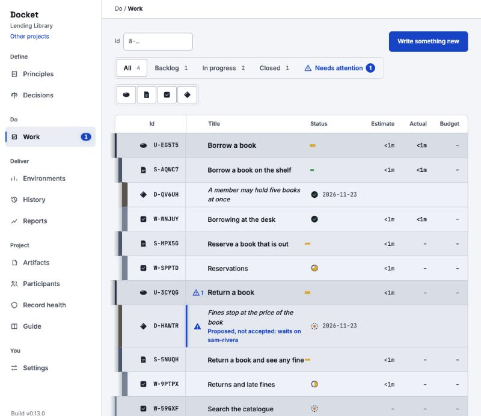
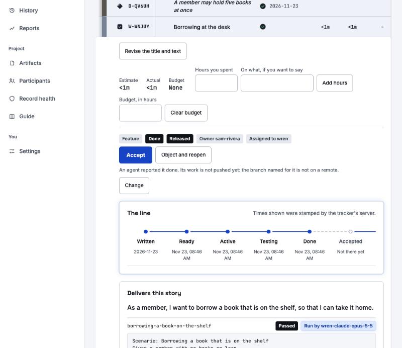
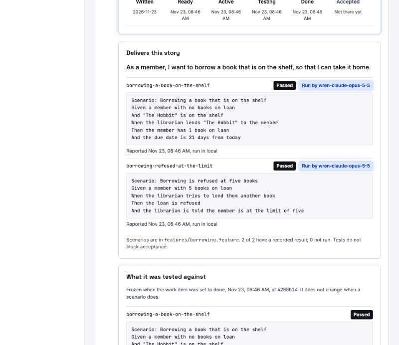
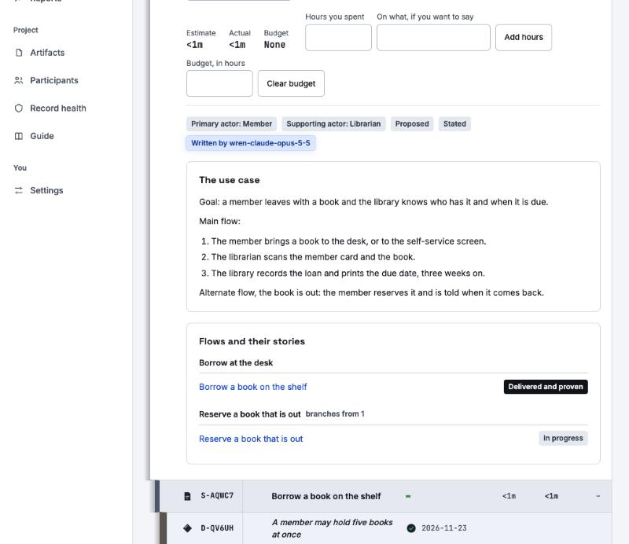
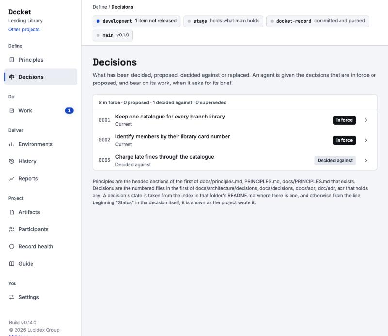
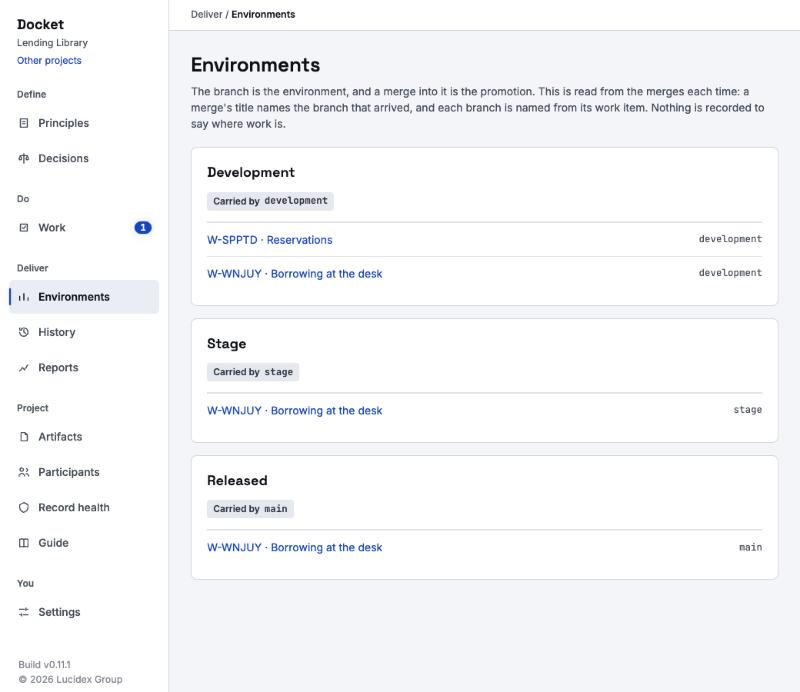
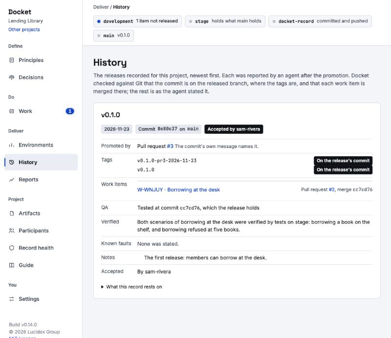
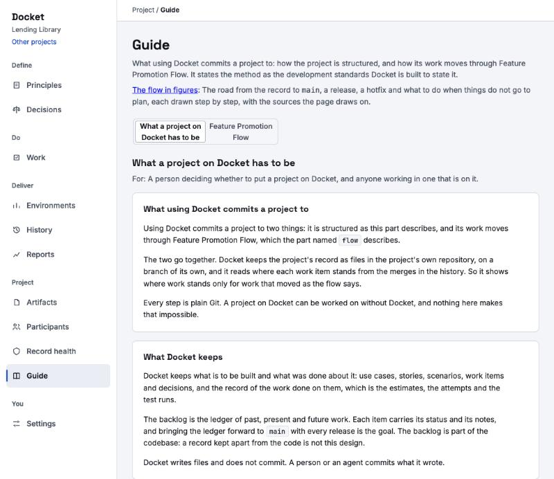

Feature Promotion Flow
How work moves from a feature to a release under Feature Promotion Flow: the branches, the checks, a release, and what to do when things do not go to plan. This is the flow on its own. The other tab adds what changes in a project that keeps its record with Docket.
Repositorygithub.com/Lucidex-Group/feature-promotion-flowThis guide, its source, and the skills for the flow.
Feature Promotion Flow is a way of branching and releasing. Every feature lives on its own branch, cut from main. Features are merged into development, where their conflicts show. A release is built on stage from the features the maintainer lists for it, tested and checked there, and promoted to main. Being on development says nothing about release: the release list is named, feature by feature.
The whole cycle, as a loop
One release, drawn as rings. Time runs clockwise from the top, and one turn is one release.
main at the centre. A feature that is released ends when it reaches stage. A feature that waits goes all the way round, and an ordinary release breaks no ring.What a project on the flow has to be
For a person deciding whether to run a project this way, and anyone working in one that does.
What using the flow commits a project to
Using Feature Promotion Flow commits a project to three permanent branches and one rule about where work starts: every feature is cut from main, and from nowhere else.
main is what is released. development receives features, so that they are merged in one place and any conflict between them shows; nothing is run on it. stage receives the release list the maintainer named. All three change only by pull request, merged as real merges and never squashed.
The branches are not environments, though in a project they may map to them. Every step is plain Git, with pull requests on GitHub, and can be done by hand.
What is set up once
A project is set up for the flow once, when it starts. Nothing here needs a tool beyond Git and GitHub.
| What is set up | What it is for |
|---|---|
development and stage, created from main when the project starts | Both are permanent. development receives features to be merged, and stage receives the release list.git fetch origin git push origin origin/main:refs/heads/development origin/main:refs/heads/stage |
Protection of main on GitHub | Force pushes are blocked and deletion is blocked. It changes only by a pull request, from stage. |
Protection of development and stage | They change only by a pull request, and deletion is blocked. A force push is allowed only to whoever resets one of them to main. |
| The repository's merge settings | Merge commits only, with squash merging and rebase merging turned off, so a pull request cannot be merged any other way. A branch is not required to be up to date before merging, since that would need development or stage merged into the feature. |
| Reuse of recorded resolutions, once per clone | A conflict resolved once is replayed when the same feature meets it again, on stage or after a reset, in the clone that recorded it.git config rerere.enabled true |
| A folder for each branch an agent works on | Each feature has a folder of its own, a Git worktree, so no two people or agents share a checkout.git config worktree.useRelativePaths true |
Where the work is written down
The flow says what is written down, reviewed, reported and decided. It does not say where. Where a project keeps its backlog, its decisions and its code reviews is in that project's own instructions.
Before a branch exists
What is to be built, with a story and scenarios where it is new behaviour. A fix names the scenario it restores, or adds one for the fault.
At the feature
The test run and the commit it was run on. The code review: the decision, and each finding with its kind and how it ended, and how much rework it caused.
The release list
The features the release is to hold, as the maintainer named them, kept where the maintainer and the agents read the same list.
At stage
The suite's run: the commit, each command with its result, and the regression count. QA's report: the result for each scenario, what was checked by hand, and what could not be done.
At promotion
The maintainer's word to promote, and the release's two tags on main.
Docket is one place to keep all of it: as files in the repository, on a branch of their own that every feature is cut from. The other tab, Feature Promotion Flow with Docket, describes the flow in a project that does.
A project that does not use it
Feature Promotion Flow is the preference, and the maintainer can say it is not necessary for a particular project, such as a repository of documents.
There, none of this applies. The project has no development or stage branch, and its commits go to main.
Why
For anyone deciding whether to work this way.
Why it exists
Most branching methods tie two decisions together: testing a feature with the others, and releasing it. Where features are cut from a shared development branch and merged back into it, whatever is on that branch is in the next release unless someone backs it out. One unfinished feature holds up everything behind it.
Feature Promotion Flow separates the two. A feature is merged into development, where its conflicts with the others show, and that says nothing about release. The release is built separately, on stage, from the features the maintainer lists for it, each merged from its own branch, and is tested and checked there.
It is close to the method the Git project uses to build Git itself, gitworkflow: topic branches that graduate through integration branches, and tagged releases. In the projects it was written for, it replaced gitflow.
Why features are cut from main
Git can merge a branch into any other branch it shares an ancestor with. What a branch was cut from decides what comes with it.
A feature cut from main holds its own commits and what is released. So it can be merged into development and later into stage for release, and neither merge brings another feature's code along. A feature cut from development would carry every other feature on development into stage with it.
That is the whole of what lets a release be chosen feature by feature. So work starts only from main, a hotfix included, and a feature takes what is released by pulling main.
development or stage, and nobody pulls from them.What it gives you
A release is named, not inherited
Being on development does not put a feature in a release. The maintainer, the person who decides what is released, names the release list feature by feature.
Nothing is run on development
It is where features are merged and their conflicts show. The release's features are run together once, on stage.
Many features at once
Every feature is built to stand alone, so several people or agents can build at the same time, each in a folder of its own (a Git worktree).
What is verified is what ships
stage holds the release list and nothing else, run and checked as a whole. Nothing is changed on stage itself.
A failed feature comes out cleanly
Usually stage is rebuilt without it. Nothing is backed out, and nothing is patched in place.
Every released scenario is tested again at every release
Not every piece of work is worked on in every release, but the whole suite runs on stage, so everything already released is tested each time, and the run says how far it reached.
Each check is made once
A feature's own tests and its code review are done at the feature, and are not repeated because a release happened. The release runs the whole suite once, on what ships, and a fresh agent checks each scenario.
A hotfix takes a release's road, alone
Cut from main, run and checked on stage, promoted. It does not pass through development first, and it never goes straight to main.
The history says where work has been
Every merge is a real merge whose title names both branches, so Git can say which branches hold a feature.
Plain Git
Every step is ordinary Git, with pull requests on GitHub, and can be done by hand.
Its limits, stated first
What has and has not been shown, what the method costs, what it leaves out, and how it compares with the most common alternative.
The evidence so far
The method is new. As it is written here it has been run on one project, through few releases, and that project kept its record with Docket. Nothing here has yet been shown with several people on several machines, and every benefit below should be read with that in mind.
What it costs
A release of n features is 2n + 2 pull requests: each feature into development and into stage, stage into main, and main into development. It is also n code reviews, one run of the whole suite, and one QA run. A feature that fails on stage usually costs a reset, a pull request for each feature that remains, and the suite run again. Because nothing runs the release's features together before stage, a conflict or a failure between them is found there. A hotfix is three pull requests, a code review, a run of the suite and a QA run, and sets aside any release being built.
What it does not cover
The method says nothing about database migrations, or about fixing an older version while a newer one is out: there is one released line. It does not say how a release is deployed, and its rollback (see the section on a bad release) assumes the previous release can be deployed again. It does not say where a project keeps its backlog, its decisions or its code reviews.
Against trunk-based development
Trunk-based development with feature flags separates testing from releasing another way: everything merges to one branch daily, and a flag decides what is released. It integrates sooner and needs no assembly. It asks that unfinished work be safe to ship switched off, and the flags, not the history, say what a release contains. This method makes the other trade. Integration comes later and costs more pull requests. In return a release is a set of whole features, each with its own tests and code review, and what is left out is not in the build at all.
Designed in, and not yet proven by use
Fewer regressions
This is what the design should produce. Too few releases have been through stage to show it.
What the regression count cannot show
A test that names a scenario is not thereby shown to check it, and a test that has been weakened still passes. The count says how far the suite reached, not how well each test checks.
The testing process as it now stands
The twelve steps were settled on November 23, 2026, after one project ran its whole suite four to six times for each release on code that had not changed. One project has since taken one small feature through them.
Reliable release dates
They depend on features staying independent. Where features require each other, a coordination handles it, at the cost of some freedom to choose.
What the parts add up to
Each of these comes from two or more pieces of the method working together, which is why no single rule delivers it.
Reliable release dates
The maintainer may change the release list at any time, so the date does not wait on one unfinished feature: it comes off the list. stage is rebuilt and not patched, so a late failure removes one feature, not the release. The date is the promise; the contents are whatever is ready by then.
Fewer regressions
Scenarios are written before the branch exists, so behaviour is pinned down first. The whole suite runs on the exact combination that ships, so every released scenario is tested again at every release. And after a hotfix main is merged into development, so the next release cannot quietly lose the fix.
Checking by someone who did not build
A feature's code is reviewed by an agent that did not write it, and stage is checked by a fresh agent that has built nothing in the project. The agent that starts QA does not write its brief.
A history that answers questions
Every merge is a real merge that names both branches and its pull request. Which of development, stage and main hold a piece of work is read from the history, not set by hand.
Fixed places to test
The road has stations. Each has its check and what comes of it, so nobody has to invent where testing happens. Nothing is checked twice on code that has not changed.
| Station | What is checked | What comes of it |
|---|---|---|
| The feature's own folder | Its own tests, those that name its scenarios, after it has pulled main | A passing run, for the commit it was run on |
| Code review | The code and its tests, on the feature's own branch, by an agent that did not write them | A report: the decision, and each finding with its kind and how it ended |
| development | Nothing is run. The features are merged | A conflict between features shows, and is resolved by a merge branch |
| The suite's run | The whole suite, once, on the named commit of stage | The commit, and each command with its result |
| QA | Each scenario the release names, read against its tests and checked by hand where they fall short, by a fresh agent | QA's report: the commit checked, the result for each scenario, and what was checked by hand |
| Promotion | The maintainer's acceptance | The promotion of stage to main, and the release's two tags |
Problems teams commonly report, and what this does about them
Complaints teams commonly voice, with what this method does about each.
| The complaint | What this method does |
|---|---|
| “One unfinished feature is blocking the release.” | A release is built from the features on its list. The unfinished one stays on development. |
| “We need a code freeze before every release.” | development never freezes. The release is built on stage, apart from ongoing work. |
| “Merge hell on long-lived branches.” | Features are built to be independent, and conflicts surface on development early. A conflict resolved once can be replayed by Git's recorded resolutions (rerere), on the machine that resolved it. |
| “The hotfix never made it back, and the bug returned.” | A hotfix takes the same road, and main is merged into development straight after, which is how development gets the fix. |
| “It worked in testing but not in the release.” | The whole suite is run on stage, which holds exactly what ships, and what is verified there is what is promoted: nothing is changed on stage itself. |
| “We run the same tests again and again.” | A step is taken only when what starts it has happened. A feature's own tests run when its code changes. Nothing is run on development. The whole suite runs once, on stage, and again only if stage changes. |
| “We reverted it and now the history is a mess.” | Before promotion nothing is reverted: stage is rebuilt without the feature. A bad release already on main is put back by deploying the previous release again, then corrected by a hotfix. main is never reverted. |
| “Nobody knows what is actually in this release.” | The release list is named feature by feature, and the history names every branch merged and the pull request that merged it. |
| “QA is a rubber stamp, or the author tested their own work.” | QA is done by a fresh agent that has built nothing in the project. It reads each scenario against the tests that name it, checks by hand what they miss, and gives a result scenario by scenario. Its brief is fixed text: the agent that starts QA sends it as written, filling in only what it leaves open. |
Working with AI agents
Five conversations teams are having about building software with AI, and where this method answers them.
“AI writes faster than we can review.”
- What is reported
- A Harvard working paper by Fiona Chen and James Stratton, Artificial Intelligence in the Firm: Bottlenecks in Software Production, finds that after firms adopted coding agents there were more commits and more pull requests, the time from a pull request to its merge grew, and the rise in resolved issues was not statistically significant.
- What this method does
- Every feature arrives at code review with its scenarios written and its own tests passing, so code review is not the first check. The strictest checking, QA, is spent only on what is chosen to ship.
- What stays true
- The method does not remove the cost of code review. That is why the rework each code review causes is said, and discussed with the user.
“We are faster, but less stable.”
- What is reported
- Google's 2025 DORA report found that adopting AI now improves software delivery throughput and still increases delivery instability.
- What this method does
- The method holds work to two standards: fast into development, strict at stage. Instability is meant to be met at that gate, before a release, with each feature small and independent.
“Running agents in parallel just moves the conflicts to merge time.”
- What is reported
- Practitioners report that separate folders stop agents overwriting each other but do not prevent conflicts, that two agents told to work the backlog pick the same task, and that the person ends up as the coordination layer.
- What this method does
- One piece of work to a branch, each in a folder of its own, and before starting an agent makes sure no other agent holds the same work. development is where conflicts are meant to surface, and a conflict resolved once is replayed by Git's recorded resolutions.
- What stays true
- The flow does not say how work is assigned. That is the project's to arrange, by whatever means it has.
“Who wrote this, and can we prove it?”
- What is reported
- There are new tools for attributing lines to an AI, and no accepted standard yet for naming one in a commit.
- What this method does
- Every commit ends with lines naming the contributor and the agent, and every merge made by pull request names its pull request. The person directing the work is its author, whatever share the agent typed.
“We are drowning in low-quality AI contributions.”
- What is reported
- Open-source maintainers are adopting policies on AI-assisted contributions. The measures in use include disclosure of AI use, evidence that a change was built and tested, and, on some projects, accepting an AI-assisted change only for an issue already accepted.
- What this method does
- All three are this method's defaults: work starts from what is written down and ready, attribution is on every commit, and a feature's tests pass before it is merged anywhere. Small changes are its aim, and nothing enforces them.
What other teams report is taken from published reports and practitioner writing gathered on November 21, 2026. The Harvard paper has been revised and its figures have changed between versions, so none is quoted here. Every source is listed under Sources.
The flow
How work moves from main to a release.
The branches, and how to read the figures
featureOne piece of work, cut from main. Also fix and hotfix.developmentWhere features are merged, and their conflicts show. Nothing is run on it.stageThe release: the listed features, run and checked together.mainWhat is released. Only a promoted stage reaches it.
- a commit
- a merge
- QA, or a code review
- work moving on, by pull request
- a pull of main, or a reset
Point at a branch, by its name or anywhere along its line, to follow it; click its name to keep it lit. Point at any link or mark to see what it is and the command behind it.
Three words for who decides
The maintainer
Decides what is released: names the release list, answers code review findings, gives the word to promote, and authorises resets, tags and repository settings.
The product owner
Decides what is built: orders the backlog, agrees stories and scenarios, and accepts decisions about how the product behaves.
The user
The person directing the work in the conversation: the one an agent asks, whose word governs, and under whose name commits are made.
On a project where one person holds all three, that person is the user, and an agent takes the user's word for each. Where a project names someone else as maintainer or product owner, that decision is theirs.
The road from main, and back to it
Work starts from main and ends on main. A feature is tested and code reviewed on its own branch, merged into development where nothing is run, and merged into stage only when it is on the release list.
development and waits for a later release. No feature is ever cut from development or stage, and nothing pulls from them.One feature, step by step
The same road as the section before, as eight cards for one feature, ending at promotion. Two standards apply. Building to development is fast. Choosing for stage is strict, and two of its steps wait for the maintainer.
- 1
Readied
What is to be built is placed under its use case and written down, with a story and scenarios where it is new behaviour. A fix names the scenario it restores, or adds one for the fault.
- 2
Cut and built
A branch is cut from main as it is on GitHub and named for its work, one piece of work to a branch, in a folder of its own. Commits as often as needed.
- 3
Tested and code reviewed
It pulls main, and its own tests, those that name its scenarios, pass in its own folder. Then its code is reviewed on its own branch by an agent that did not write it, and each finding is answered.
- 4
Merged into development
It pulls main, and a pull request into development is merged without asking. Nothing is run there. Being here does not mean it will be released.
- 5
On the release list
The maintainer names the release list, before the work where possible. Each time a feature on it lands, the list is checked against the bar for stage.
waits for the maintainer's word - 6
Built on stage
Once every feature on the list meets the bar and the list is confirmed, one pull request into stage for each, in the order they first went into development. No candidate is built first.
- 7
Run and checked
The whole suite is run on stage, once, and reports its regression count. Then QA: a fresh agent that has built nothing in the project reads each scenario against its tests and checks by hand what they miss.
- 8
Promoted
QA's report is put in front of the maintainer. On the maintainer's word stage is promoted to main and tagged, and development is rebuilt from main.
waits for the maintainer's word
Seeing a feature before it is tested
A person working with an agent will want to see what has been built before it goes anywhere. That is what a developer does while working on a feature, and it is an option, not a step of the testing process.
Where
From the feature's own folder, apart from anything released that is in use: on a port of its own, with data of its own and never the real data.
When
Before or after the feature is tested, whenever a person wants to see it. The agent says how to reach it, and builds it again when the code changes.
Seeing the work is not testing it. The feature's own tests still run when its code is written or changes, and the release is proved on stage.
The checks, in order
Each word means one thing. A review is always a plan review or a code review.
- 1
Plan
The files, the changes, their order, the risks and how the result will be verified.
- Who
- The agent that will build
- When
- Before building, where a wrong call would be costly after it is merged
- 2
Plan review
A reading of the plan against the code.
- Who
- A second agent
- When
- When a plan needs further input or a second opinion
- 3
Test
The feature's own tests, those that name its scenarios, run on its committed code in the feature's own folder, after it has pulled main.
- Who
- The agent that built it
- When
- Before its code review, and whenever its code changes. A pull does not start it
- 4
Code review
A reading of the feature's own code and tests, on the feature's own branch. The builder checks each finding against the source, classifies it, and deals with it by its kind. A rework is code reviewed again only when it fixed a defect or a risk, and that code review reads the fix. Nothing is code reviewed on stage.
- Who
- An agent that did not write it
- When
- Before the first merge into development, and for every hotfix
- 5
The suite's run
The project's whole suite, run once on the named commit of stage, with each command and its result noted, and reported with its regression count. It is mechanical: no judgement is used. It is the one run of the whole suite.
- Who
- The agent assembling the release
- When
- Once the release list is merged into stage, and again only when stage changes
- 6
QA
The independent check of stage. Each scenario the release names is read against the tests that name it, and what the tests do not check is checked by hand. It gives a result for each: verified by a test, partly verified, no test found, checked by hand, or failed, saying what failed and what kind of fault it is. It also confirms the list of what each feature has and lacks. It does not run the suite. Its brief is fixed text, sent as written with its blanks filled in.
- Who
- A fresh agent that has built nothing in the project
- When
- After the suite has passed on stage
- 7
Acceptance
The maintainer's word to promote stage to main, given with QA's report in front of them.
- Who
- The maintainer
- When
- After QA
When something fails. A failure belongs to a feature, wherever it is caught. It is said which step caught it (the feature's own tests, the code review, the suite's run on stage, QA) and what kind it is, by the six kinds of finding listed under rework after a code review. The feature goes back to its builder and is fixed on its own branch. Knowing the step and the kind is what shows, over time, which step catches what and what reaches stage.
What makes a feature eligible for stage
Being on development is not enough. These five conditions are the bar for stage. A feature below it is on the release list only by the maintainer's decision.
Its scenarios pass
Its work names its scenarios, or says why it has none; naming none, with no reason, does not meet this. Its tests pass in the feature's own folder for the feature's own code as it stands: a run made before the feature's code last changed does not count, and the tests are run again. A pull that brought in what was released does not make a run out of date. For a member of a coordination whose tests cannot pass alone, a passing run from the coordination branch's folder stands in its place when it names the commit of each member and no member has changed since.
Its code is reviewed
By an agent that did not write it, with each finding dealt with as its kind requires. A finding put to the maintainer keeps the feature out until it is answered, to fix it or to accept it as it is.
It stands alone
It holds no other unreleased feature's commits. A member of a coordination is chosen only with, or after, the members it requires.
No open defect
None is known against it.
Its decisions are accepted, and its story agreed
Every decision it rests on is accepted by the product owner. Any story an agent wrote for it has been seen and agreed by the product owner: a feature built from a story an agent wrote itself may be built to development, and waits at stage until then.
The release list is the maintainer's choice. Each time a feature on it is merged into development, and each time the list changes, it is checked against this bar, and the maintainer is told that every feature meets it or which lacks what; the agent never chooses the list. That agent may have built part of the release, so the fresh QA agent confirms what it said. If the maintainer includes a feature below the bar, that is the maintainer's decision, given with what the feature lacked in front of them, and QA reports what it lacked as not verified.
What each branch holds
A feature's folder always holds everything needed to build and test it: what is released, and its own code. Nothing of any other feature is in it.
maina featuredevelopmentstageWhere everyone works
One repository, checked out in several folders, so no two people or agents share a checkout.
The project's own folder
~/Development/<Project>The user works here, on checked-out branches. An agent does not.
A folder for each feature
~/Development/worktrees/<Project>/<kind>-<id>-<name>An agent works here, one folder to a branch, and never in a checkout someone else is using. The feature is built and tested here.
Releases
Building one on stage, testing it, naming it.
A release
The same road, for three features. A release is built on stage from the features on its list, the whole suite is run there once, QA checks it, and it is promoted to main as a whole.
development is rebuilt: reset to main, and feature B, still in progress, merged into it again without being tested or code reviewed again. No feature is sent back by the release. stage stays as it is: it already holds what main holds.Rebuilding development after a release
After a release, development is usually reset to main and the features still in progress are merged into it again. By then most of what it held is released, so the reset costs little, and it keeps development from gathering merges that GitHub reads as conflicts.
On the maintainer's word to promote, once stage is promoted and tagged. First list the unreleased features development holds, the merges it has that main does not:
git fetch origin git log --merges --first-parent --format=%s origin/main..origin/development
Reset it to main:
git push --force-with-lease origin origin/main:development
Merge each of those features again, from its own branch by pull request, as any feature is merged into development, without testing or code reviewing it again. Tell everyone, so that anyone with a copy takes it from GitHub again. Where nothing unreleased was on it, the reset is the whole of it.
gh pr create --base development --head feature/<id>-<name> --title "Merge branch 'feature/<id>-<name>' into development" gh pr merge <number> --merge --subject "Merge branch 'feature/<id>-<name>' into development" --body "Pull-request: <the pull request's URL>"
Where a project keeps it running. A project with a reason to keep development running across releases, such as wanting to see what builds up on it, merges main into it by pull request after each release instead. After a hotfix, main is merged into it the same way, since the work in progress is where it was.
gh pr create --base development --head main --title "Merge branch 'main' into development" gh pr merge <number> --merge --subject "Merge branch 'main' into development" --body "Pull-request: <the pull request's URL>"
The whole cycle, as a loop
The same release, drawn as rings. Time runs clockwise from the top, and one turn is one release. Where the linear picture ends, this one begins again.
main at the centre. A feature that is released ends when it reaches stage. A feature that waits goes all the way round, and an ordinary release breaks no ring.The testing process
What is tested, where, and what starts it, as twelve steps. A step is taken when what starts it has happened, and not otherwise: nothing is run again on code that has not changed.
Before the work, where possible, the maintainer names the release list: the features the release is to hold. It is kept where the project's own instructions say; where they name no place, the agent assembling the release keeps it as the maintainer gave it and says it back at each check.
| Step | What starts it | Who | What is done |
|---|---|---|---|
| 1. Pull main into the feature | The feature's code is written, and it is about to be tested for the first time. | The agent that built it | main as it is on GitHub is merged into the feature, so that it is tested on what is released. |
| 2. Test the feature | The feature's code is written, or has changed since it was last tested. A pull does not start it. | The agent that built it | The code is committed, and the feature's own tests, those that name its scenarios, are run in its folder. |
| 3. Review the feature's code | Its tests pass and its code has not been reviewed. Or a rework has fixed a defect or a risk. | An agent that did not write the code; the builder answers | The feature's own code and tests are read, and each finding is answered by its kind. Nothing is run. |
| 4. Merge the feature into development | Its tests pass and every finding is answered. Or a feature already there has been reworked. | The agent that built it | The feature pulls main, is pushed, and is merged by pull request. Nothing is run on development. |
| 5. Check the release list | A feature on the list has just been merged into development. Or the maintainer has changed the list. | The agent that merged the feature; the maintainer owns the list | Each feature on the list is checked: it is on development, and it meets the bar for stage. The maintainer is told that all do, or which lacks what. Nothing is run. |
| 6. Build stage from the list | Every feature on the list meets the bar, or is on it by the maintainer's word, and the maintainer has confirmed the list. | The agent assembling the release | stage is reset to main if it holds anything main does not, and each feature is merged by pull request. No candidate is built anywhere first. |
| 7. Run the suite on stage | Every feature on the list is merged into stage. Or stage has changed since the suite last ran on it. | The agent assembling the release. It is mechanical | The project's whole suite is run on the named commit of stage, and each command and its result is noted, with the regression count. This is the one run of the whole suite. |
| 8. QA | The suite has passed on stage. | A fresh agent that has built nothing in the project | Each scenario is read against the tests that name it; what the tests do not check is checked by hand; a result is given for every scenario. It does not run the suite. |
| 9. A failure on stage | Step 7 or step 8 reports a failure. | The agent assembling the release, without waiting; the feature's builder fixes | The failure is recorded against its feature. Usually the feature comes off and stage is rebuilt; a small fix may be merged on top. Then step 7 again, and step 8 for the feature that was fixed; after a feature comes off, QA's results for the rest stand. |
| 10. What QA observed outside the scenarios | QA's report names something wrong that fails no scenario. | The maintainer | The maintainer says: release as it is and put it in the backlog, or treat it as a failure (step 9). |
| 11. Acceptance | QA has reported and every failure is dealt with. | The maintainer | QA's report is put in front of the maintainer, who gives the word to promote. It covers step 12. |
| 12. Promote | The maintainer's word. | The agent that assembled stage | stage is merged into main by pull request and tagged. development is usually rebuilt: reset to main, with the features still in progress merged again; where it is left running, main is merged into it. Nothing is run. |
Every released scenario is tested again at every release. Not every piece of work is worked on in every release, but the suite run on stage holds the tests of everything already released, so all of it is tested each time. That is a feature of the method, and it is why the whole suite runs on stage and nowhere earlier.
The regression count. Every run of the suite reports how far it reached: the scenarios whose tests ran and passed; the scenarios whose tests were skipped, each named with the test; and the scenarios no test names, whose number is given every time and the new ones called out. A skipped test has not checked its scenario: it is never a pass, and where the skip came from the order of the commands or the machine, the test is run again on the same commit. The count is made by a script the project keeps, never by hand; where there is none, or the tests do not name their scenarios, the run says the count was not made and why, and still names each skipped test. Two limits are said with it every time: a test that names a scenario is not thereby shown to check it, and a test that has been weakened is not seen.
What this leaves out, on purpose. Nothing is run when a feature lands on development. No copy of the release is built and tested before stage. A feature does not pull again because a release happened, and is not tested or code reviewed again because of one. QA does not run the suite. So stage is the first place the release's features are together without the rest of development, and a conflict or a failure between them is found there.
Showing a release before it is built. Where people need to see a release running before stage is built, development can be reset to main and rebuilt from the release list, each feature by its own pull request. Nothing in the testing process depends on it.
How the history says where work is, and how a release is named
A commit does not record its branch, but a merge's title names the branch merged and the branch merged into, and its body names the pull request that made it. Read by first parent, each permanent branch is one line per arrival.
git log --first-parent main, one release to an entryMerge branch 'stage' into main tag v0.6.0-pr142-2026-11-21
Pull-request: https://github.com/<account>/<project>/pull/142
Merge branch 'stage' into main tag v0.5.1-pr131-2026-11-09, a hotfix
Pull-request: https://github.com/<account>/<project>/pull/131git log --first-parent stage, one arrival to an entryMerge branch 'feature/w-t3xa8-passkey-sign-in' into stage Merge branch 'fix/w-k7f3q-reset-email' into stage
Merge remote-tracking branch 'origin/main' into feature/w-t3xa8-passkey-sign-in
A release's name is its tag: v<version>-pr<number>-<date>. The version comes first, then the number of the pull request that promoted stage to main, then the date of the promotion. A second tag on the same commit is the bare version, v<version>, for tools: under semantic versioning a hyphen after a version marks a pre-release, so a tool would rank the descriptive name below the release it names. Every merge made by pull request carries one line in its body, Pull-request: and the pull request's URL, so the merge commit itself leads to GitHub. The history of releases is read from these tags.
Where a piece of work stands is read from the merges, not set by hand. Which of development, stage and main hold its branch is a fact of the history. Before saying that work is or is not released, check it there.
When things do not go to plan
Rework, failures, hotfixes, a bad release, conflicts and features that require each other.
Rework after a code review
A feature is code reviewed on its own branch, and its findings answered, before it is first merged into development, so that it is merged once. The builder classifies each finding and deals with it by its kind, and anything to fix is fixed where the feature was built.
development when it was reworked is merged into it again by pull request; development is not reset for it. How much rework each code review caused is said, and discussed with the user.| Kind of finding | What it is | What happens to it |
|---|---|---|
| Defect | The code does not do what a scenario or a stated requirement says. | Fixed on the feature's own branch. |
| Risk | The tests pass, but a wrong thing can happen: lost data, a race, an unsafe command. | Fixed, or put to the maintainer to accept as it is. |
| Missing or weak test | A scenario, or part of one, that no test really checks. | Fixed where the scenario is otherwise unverified; otherwise noted, for QA to report. |
| Untrue wording | A document, a message or a comment that says something untrue. | Fixed. It never holds a feature back on its own. |
| Design or style | A preference about how the code is shaped, with no defect or risk in it. | Put in the backlog. It never holds a feature back. |
| Wrong | The finding misreads the code or a convention of the repository. | Rejected with the evidence. A tie-breaker confirms it: any agent that neither wrote the code nor raised the finding, given the finding and the evidence. It is then listed for the maintainer with its reason, and the work moves on; it is not asked. |
The builder classifies each finding; the reviewer's own label, blocking or not, is not the classification. A finding put to the maintainer keeps the feature out of stage until it is answered, to fix it or to accept it as it is. The reviewer first reads what is already settled, the project's decisions and the code reviews of earlier features, so a finding already rejected is not raised again unless something has changed.
When a feature fails on stage
If stage fails, it is not left standing. A failed feature is not backed out. Usually it comes out, and stage is rebuilt without it; where the fault is small and quickly fixed on the feature's own branch, the feature may be merged again on top. Either way the suite is run on stage again.
stage is reset to main, the rest of the release list is merged into it again, and the suite is run again; QA's results for the features that remain stand. The fix is made on the feature's own branch, tested, and code reviewed where it is to a defect or a risk. A feature the maintainer did not list never goes in.When to reset development or stage, and when to leave it running
Both can be reset to main when that serves the work. This is guidance, not a list to apply by rote: say which case you see and why, and where it is not plain, ask. A reset is a push, so it is on the maintainer's word; the maintainer's confirmation of the release list covers the resets of stage that building it needs.
A reset is usually right
After a release, for development
What it held is by then mostly released. It is reset to main and the features still in progress are merged again. The maintainer's word to promote covers it.
Something has to come out
A feature on development is abandoned, or its merge is in the others' way; a feature has failed on stage.
A clean start is needed
Before a hotfix, stage is reset so that the fix travels alone. Before a release is built on it, stage is reset if it holds anything main does not.
The branch is to show one thing
development is rebuilt from a release list so that people can look at that release wherever development is deployed. No test is run there.
The branch can no longer be trusted
It has taken a merge it should not have, or so much has gone wrong on it that finding the cause costs more than building it again.
It is usually better left running
stage, after a release or a hotfix
It already holds what main holds.
development, where the project has a reason to keep it running across releases
Such as wanting to see what builds up on it. Then main is merged into it by pull request after each release.
While features on it are waiting for a release
Resetting development means merging each of them again.
When a small correction to a feature of the release is quicker and as safe
The feature is fixed on its own branch and merged again by pull request, on top of what is there, where rebuilding the whole release would cost more than it protects. Nothing is ever changed on the branch itself.
After a reset, the features that should still be there are merged again, each from its own branch by pull request, and everyone is told, so that anyone with a copy takes it from GitHub again.
When items need to come out of development
This is one reason to reset development; the cases are listed in the section before. After a release it is usually rebuilt, as the section on a release shows. Rebuilding it from a release list, to show that release running before stage is built, is a case of the same thing: everything outside the list comes out, and is merged in again afterwards.
development is reset, every surviving feature is merged again, so the same conflict can come up again. Git's recorded resolutions replay it.A hotfix
A hotfix is a fix that cannot wait for the next release. It takes a release's road from stage onward, alone. It does not pass through development, and it never goes straight to main.
development gets the fix when main is merged into it by pull request. If the fix conflicts with a feature there, the conflict shows in that pull request.A bad release already on main
Rolling back is two things, in this order: put production back, then correct the release. main is never reverted or rewritten.
stage and the steps after a release are as in the hotfix above and are left out of this drawing.Resolving a conflict
Whoever opened the pull request resolves the conflict. Nothing is pushed to development or stage to get round one.
stage. The merge is made on a machine, so Git's reuse of recorded resolutions (rerere, turned on once per clone) applies: the same conflict, resolved once, is replayed when it comes up again on that machine. The recordings are kept per clone, and Git has no means of sharing them, so a conflict resolved on development is replayed on stage only from the same clone; from another, it is resolved again. stage is the first place the release's features are together without the rest, so a conflict between them may first show there. A merge branch is for a real conflict, and it is the one branch ever cut from development or stage.A merge resolves its conflict and nothing else. Any other change features need in order to work together is written on a feature's own branch, never in a merge and never on development or stage, and the feature is merged again. Where such a change is only right with the other features present, those features require each other, and the answer is a coordination.
A conflict GitHub reports and Git does not have. A feature cut from main after a release holds every released feature. development holds the same features by another route, their own pull requests. Until the two are joined they share each released feature separately, and GitHub reports a conflict on a pull request that Git on a machine merges cleanly. The cure is to bring the two level after every release and hotfix: development is rebuilt from main after a release, and main goes into it by pull request after a hotfix or where it is left running. If the merge branch has become routine, something has not been merged that should have been, and that is what to say.
Features that require each other
Sometimes one feature cannot be built or tested without another that is not yet released, or features work together only with a change that is right only with the others present. One answer is to wait for the first to be released. The other is a coordination, which lets them be worked on together while each stays on its own branch. Which is the maintainer's to decide.
development or stage only with, or after, the members it requires.| A branch that holds merges and no work of its own | What it is for | Where it ends |
|---|---|---|
Coordination branchcoordination/<id>-<name> | Features that require each other are built and tested together. | Never merged anywhere |
Merge branchmerge/<feature id>-into-<branch> | A conflict is resolved without changing the feature. | Merged into development or stage by pull request |
What not to do
The mistakes that cost a release later.
Why every branch is cut from main
Git can merge a branch into any branch it shares an ancestor with. What the branch was cut from decides what comes with it. This is the rule the rest of the method rests on, and the first thing not to do.
development. Cut from there, feature X carries both into stage. Cut from main, which holds only what is released, it arrives alone and can be chosen for a release by itself. The other ways to end up carrying work that was not chosen are in the next section.The other mistakes, in pairs
Cutting from development, above, is the plainest case. Each of these does the same kind of damage by another route: it looks harmless when it is done and costs a release later. Wrong on the left, right on the right.
development or stage is for running and testing only. After a reset, a pull merges the old commits back in.development into the feature. The feature then carries every other feature wherever it goes.stage is what ships. A hotfix is no exception.stage. Usually it is reset, and the rest of the release list is merged again.Don't Cut work from development or stage, or pull from either.
Do Work starts only from main, a hotfix included. A feature takes what is released by pulling main: before it is first tested, and as it is merged into development.
Don't Commit on development or stage, or merge into either on your own machine.
Do Both change only by a pull request on GitHub, merged as a real merge.
Don't Cut a branch for work that is not ready.
Do What is to be built is written down first, with a story and scenarios where it is new behaviour. A fix names the scenario it restores, or adds one for the fault. A standing instruction to keep working does not change this.
Don't Change anything in a merge beyond its conflict.
Do A merge resolves its conflict and nothing else. Any other change features need in order to work together is written on a feature's own branch, and the feature is merged again. Where the change is only right with the other features present, they are tied in a coordination.
Don't Merge a feature into development before its code review.
Do It is code reviewed on its own branch, and the findings answered, first, so that it is merged once.
Don't Commit work on a coordination branch, or merge it anywhere.
Do The work is done on the member's own branch, and the member is merged into the coordination branch again. The members go onward one by one.
Don't Reset development or stage by rote.
Do Both can be reset to main when that serves the work. Say which case you see and why, and where it is not plain, ask. After a release development is usually rebuilt, and stage stays as it is.
Don't Leave stage standing with a known fault.
Do Usually the feature comes out and stage is reset. Where the fault is small and quickly fixed on the feature's own branch, it may be merged again on top. Either way the suite is run on stage again.
Don't Run the suite again on code that has not changed.
Do A step is taken when what starts it has happened. A feature's tests run when its code changes; a pull, or a release made since, does not start them. Nothing is run on development. The whole suite runs once, on stage, and again only when stage changes.
Don't Count a skipped test as a pass.
Do A skipped test has not checked its scenario. It is named, and where the skip came from the order of the commands or the machine, it is run again on the same commit.
Don't Count a scenario as passed because the suite passed.
Do QA reads each scenario against the tests that name it and gives a result for each, and reports one with no test as no test found.
Who decides what
What may be done without asking, and what waits for the maintainer.
Who may do what without asking
Work on a feature is free. Anything that changes what is released waits for the maintainer.
| What | May it be done | Note |
|---|---|---|
| Commit on a feature | without asking | As often as needed |
| Push a feature, then open and merge its pull request into development | without asking | For work the user has said to work, once its code review is answered. A feature already on development is merged again after rework |
| Open a pull request into stage | waits for the maintainer's word | The maintainer names the release list. The maintainer's confirmation of the list covers its pull requests into stage. Including a feature below the bar is the maintainer's decision |
| Promote stage to main, and tag the release | waits for the maintainer's word | The maintainer's word to promote is acceptance. The agent that assembled stage performs it |
| Rebuild development after a release, or bring main into it after a hotfix | waits for the maintainer's word | Covered by the maintainer's word to promote |
| Reset development | waits for the maintainer's word | When that serves the work: usually after a release, when something has to come out of it, or to show a release running before stage is built |
| Reset stage | waits for the maintainer's word | Usually when a feature has failed on it, before a hotfix, and before a release is built on it if it holds anything main does not. The maintainer's confirmation of the release list covers the resets of stage that building it needs |
| Change branch protection or repository settings | waits for the maintainer's word |
Sources
Where the method comes from, and where each claim about other teams comes from, with how far each was checked.
The method
| Source | What it is used for | How far it was checked |
|---|---|---|
| The development standards this guide is drawn from | The rules and the steps, as they stood on November 24, 2026. They are Lucidex Group's own and are not published; every rule and figure here is drawn from them. | source |
| gitworkflows, in Git's manual | The Git project's own method, and the parent of this one: topic branches that graduate through integration branches, throw-away integration, tagged releases. | named in the standards; read at its source |
| gitworkflow, explained for other teams | The same method set out for teams outside the Git project. | named in the standards; not opened in this check |
| Branch Per Feature, Adam Dymitruk, 2012 | The closest published method: every feature starts from the same commit, and a release is assembled from the features that are ready. | named in the standards; not opened in this check |
| Branch Per Feature in practice | An account of using it on one project for most of a year: a release is built by merging in the features that are ready. | named in the standards; read at its source |
| FeiFlow, Maksym Moyseyev, 2024 | Similar in one respect: an integration branch that is never merged anywhere and is rebuilt to clear it. | named in the standards; read at its source |
What other teams report
| Source | What it is used for | How far it was checked |
|---|---|---|
| DORA 2025: State of AI-assisted Software Development | AI adoption now improves software delivery throughput and still increases delivery instability. Used in "We are faster, but less stable." | checked at its source |
| Artificial Intelligence in the Firm: Bottlenecks in Software Production, Fiona Chen and James Stratton, Harvard working paper | After firms adopted coding agents: more commits and pull requests, a longer time from pull request to merge, and a rise in resolved issues that is not statistically significant. Used in "AI writes faster than we can review." | read at its source, in the version of November 19, 2026; the first third of the paper, which holds the findings |
| 5 Lessons from Running AI Coding Agents in Parallel, Batty | Two agents told to work the backlog took the same feature, separate folders leave the conflicts for merge time, and the work needs someone supervising. The source for "Running agents in parallel just moves the conflicts to merge time." | read at its source |
| Git Worktrees Changed How I Run Parallel AI Agents, Batty | Separate folders stop agents overwriting each other, conflicts still come at merge time, and a person assigns the tasks and orders the merges. Used in the same conversation. | read at its source |
| Identity-Attributed Git Commits via Tier-Structured Trailers, Blake Morrison, an Internet-Draft | One person's proposal, not adopted by any working group, for commit trailers that name the person and the AI tool. Evidence that naming an AI in a commit has proposals and no accepted standard. Used in "Who wrote this, and can we prove it?" | read at its source |
| Git AI | A tool that records in Git notes which lines an agent wrote. The "new tools for attributing lines to an AI" in the same conversation. | read at its source |
| AI Policy, Disclosure, and Human in the Loop: How Are Contribution Guidelines Adapting to GenAI?, Andre Hora and Romain Robbes, 2026 | Of 1,000 popular repositories, 118 had a policy on AI. About half of those policies require disclosure, and most require a person in the loop. The source for "Open-source maintainers are adopting policies." | read at its source |
| Stop Closing the Door. Fix the House., Angie Jones, O'Reilly Radar, 2026 | One maintainer's advice: say how AI may be used on the project, and ask contributors to disclose it and to build and test before opening a pull request. It reports one project accepting AI-assisted changes only for accepted issues, and argues against closing the door that way. | read at its source |
Skills
The six skills delivered with Feature Promotion Flow: what each does, when an agent uses it, and its whole text.
RepositoryLucidex-Group/feature-promotion-flow, in plugin/
An agent working by the flow loads these skills as it works. Each section below is built from the skill's own file, so what you read here is what the agent reads.
The skills
What an agent is given, and how to install it.
What the skills are
A skill is a set of written instructions an agent loads when the work calls for it. These six are Feature Promotion Flow written for an agent: the method, and a procedure for each step of it.
They are the flow on its own. A project that keeps its record with Docket adds Docket's own skills, which are listed in the Docket tab.
| Skill | What it does |
|---|---|
The flow itselffeature-promotion-flow | The method: branches, merges, who may do what, and the names of the checks. |
Setting a project upfpf-set-up-project | Sets a repository up for the flow, once. |
Starting a featurefpf-start-feature | Starts a piece of work on its own branch and folder. |
Building to developmentfpf-build-to-development | Tests a feature, code reviews it, and merges it into development. |
Making a releasefpf-release | Makes a release, from the release list to the tags. |
Making a hotfixfpf-hotfix | Releases a fix that cannot wait. |
Installing them
They are a plugin for Claude Code. In Claude Code, add this repository as a plugin marketplace, then install the plugin:
/plugin marketplace add Lucidex-Group/feature-promotion-flow /plugin install feature-promotion-flow@lucidex-feature-promotion-flow
Or copy the folders under plugin/skills/ in the repository into your own skills folder: ~/.claude/skills/ for every project, or .claude/skills/ in one project.
The repository. github.com/Lucidex-Group/feature-promotion-flow. The skills are licensed CC BY 4.0: use, adapt and share them, with credit to Lucidex Group.
What a project says for itself
The skills say what is written down, reviewed, reported and decided. They leave to each project's own instruction file where its backlog, code reviews, QA reports and decisions are kept, who the maintainer and the product owner are, and how its tests are run. fpf-set-up-project lists them.
The skills name a folder for each branch under ~/Development/worktrees/<Project>/. Use another place if you prefer; what matters is one folder to a branch.
The method
The skill an agent loads before any Git command that changes anything.
The flow itself
The skill feature-promotion-flow
The method itself: which branches there are, what is cut from what, how merges are made, who may do what without asking, and what each check is called. The other five skills are its procedures, and each starts by loading it.
When it is used
The branching and release method, Feature Promotion Flow (FPF): which branches exist, what is cut from what, how merges are made, who may push what, and what each step of checking is called. Load before any Git command that changes anything (branch, commit, merge, push, pull request, reset, tag) in a project that uses FPF: one with development and stage branches, or whose instruction file says so. The other fpf- skills are its procedures.
What it covers
- The branches
- Starting work
- Merging
- Who may do what without asking
- Two standards
- The testing process
- The words
- When something fails
- After a release or a hotfix
- Resetting
developmentandstage - Reading the history
- Folders
Comes with. Reference files it points to when they are needed: coordination.md, git-features.md, why.md.
The whole skill, as an agent reads it
plugin/skills/feature-promotion-flow/SKILL.md
--- name: feature-promotion-flow description: "The branching and release method, Feature Promotion Flow (FPF): which branches exist, what is cut from what, how merges are made, who may push what, and what each step of checking is called. Load before any Git command that changes anything (branch, commit, merge, push, pull request, reset, tag) in a project that uses FPF: one with `development` and `stage` branches, or whose instruction file says so. The other fpf- skills are its procedures." --- # Feature Promotion Flow A way of branching and releasing. Its procedures are skills of their own: `fpf-set-up-project`, `fpf-start-feature`, `fpf-build-to-development`, `fpf-release` and `fpf-hotfix`. The reasons for it, and its relation to Git's own workflow, are in [reference/why.md](reference/why.md). This skill and its procedures are the process alone. A project may add to it in its own instruction file, and a tool the project uses may add a skill of its own. Where either says something different, it governs in that project. **Where things are kept.** These skills say what is written down, reviewed, reported and decided. Where a project keeps its backlog, its decisions and its code reviews is in that project's instruction file. A project uses Feature Promotion Flow when it has `development` and `stage` branches, or its instruction file says so. The maintainer can say it is not necessary for a particular project. There, none of this applies. **Three words for who decides.** *The maintainer* decides what is released: names the release list, answers code review findings, gives the word to promote, and authorises resets, tags and repository settings. *The product owner* decides what is built: orders the backlog, agrees stories and scenarios, and accepts decisions about how the product behaves. *The user* is the person directing the work in the conversation: the one an agent asks, and whose word governs. On a project where one person holds all three, that person is the user, and an agent takes the user's word for each. Where a project names someone else as maintainer or product owner, that decision is theirs. ## The branches - **`main`** is what is released. Nothing reaches it except a promoted `stage`; a hotfix reaches it the same way. - **A feature** is `main` as it was when the feature was cut, plus the feature's code. Its folder holds everything needed to build and test it, and testing happens there. - **`development`** receives features, so that they are merged in one place and any conflict between them shows. No test is run on it. Being on it does not mean a feature will be released. - **`stage`** receives the release list the maintainer named. What is verified there is what ships. `development` and `stage` are permanent, created from `main` when the project starts. The branches are not environments, though in a project they may map to them. Where a piece of work stands is read from the merges, not set by hand: which of `development`, `stage` and `main` hold its branch is a fact of the history. Before reporting that work is or is not released, check it there. ## Starting work - **Work starts only from `main`,** a hotfix included. Never cut work from, or pull from, `development` or `stage`, and never merge `development` into anything. - **Cut a branch only when its work is ready:** what is to be built is written down, with a story and scenarios where it is new behaviour. A fix names the scenario it restores, or adds one for the fault. Until then the work is still backlog and has no branch. - **Name the branch for its work:** `<kind>/<id>-<a few words>`, such as `feature/w-t3xa8-passkey-sign-in`. `<id>` is the work item's id in lower case where the project gives its work ids; where it does not, the few words alone. For work, the kind is `feature`, `fix` or `hotfix`. One piece of work to a branch. The two other kinds of branch, `coordination/…` and `merge/…`, hold only merges and no work. - **Every feature is cut fresh.** Never cut a feature from another feature, and never merge one feature into another: a feature that carries another's commits cannot be chosen for a release without it. - **Features that require each other** are the maintainer's to decide: wait for the first to be released, or tie them in a coordination. A coordination names its members, as many as require each other, and has a branch `coordination/<id>-<name>`, cut from `main`, that holds only merges of the members. The members are merged into it and tested together there. A fix is never written on the coordination branch: it is written on the member's own branch, and the member is merged into the coordination branch again, until they work together. The coordination branch is never merged into anything, and nothing is cut from it. The members go to `development`, `stage` and `main` one by one, each from its own branch and only with or after the members it requires. The steps are in [reference/coordination.md](reference/coordination.md). - **A feature takes what is released by pulling `main`** (`git fetch origin`, then `git merge origin/main`, in the feature): before it is first tested, as the first thing in its merge into `development`, and whenever, while it is being built, it needs something that was released. A pull starts no test and no code review, and a release made after a feature was tested does not send it back, unless there is an issue: a conflict in the feature's code, or a change to the wording of a scenario it names. ## Merging - **`development`, `stage` and `main` change only by pull request.** Never commit on any of them, and never merge into any of them on your own machine. The one other write to `development` and `stage` is a reset to `main`. Feature branches are kept. - **Merges are real merges. Never squash.** The title names the branch merged and the branch merged into (keep both names if you rewrite it), and the body's one line names the pull request: ``` gh pr merge <number> --merge --subject "Merge branch 'feature/<id>-<name>' into development" --body "Pull-request: <the pull request's URL>" ``` - **Never use GitHub's "Update branch" or its conflict editor** on such a pull request. They merge `development` or `stage` into the feature. - **Never rebase a feature that has already been merged somewhere.** - **A copy of `development` or `stage` on your machine is for running and testing only.** Take it from GitHub without a local branch (`git fetch origin`, then `git switch --detach origin/<branch>`), which works whichever folder holds the local name. Never `git pull` on either: after a reset, a pull brings the old commits back. Reset one on GitHub the same way, with no local branch: `git push --force-with-lease origin origin/main:<branch>`. - **Whoever meets a merge conflict resolves it,** and the merge is still made by pull request. Cut a branch from the receiving branch as it is on GitHub (`git fetch origin`, then `git switch -c merge/<feature id>-into-<branch> origin/<branch>`), merge the feature into it (`git merge --no-ff <feature> -m "Merge branch '<feature>' into <branch>"`), resolve the conflict there, push that branch and open the pull request from it. The feature itself is not changed. This branch is not work cut from `development` or `stage`: it holds one merge and exists to go back by pull request. - **A merge resolves its conflict and nothing else.** Any other change features need in order to work together is written on a feature's own branch, never in a merge and never on `development` or `stage`, and the feature is merged again. Where such a change is only right with the other features present, those features require each other, and the answer is a coordination (under "Starting work"). - With `git config rerere.enabled true` in the clone, a conflict resolved once is replayed when the same feature meets it again. - **GitHub may report a conflict that Git does not have,** when the two branches share more than one latest commit. Rebuilding `development` after a release, or merging what was released into it, prevents it (under "After a release or a hotfix"). If the `merge/…` branch has become routine, something has not been merged that should have been: say so. ## Who may do what without asking - **Commit on your feature branch as often as you need to.** - **For work the user has said to work,** push the feature branch, open its pull request into `development` and merge it. - **Everything else on a Git host waits for the maintainer's word:** pull requests into `stage` and `main`, resets, tags and settings. The maintainer's confirmation of the release list covers its pull requests into `stage` and each reset and rebuild of `stage` until it can be merged. Promotion waits for its own word. - Clear a shared branch with `git push --force-with-lease`, never a plain force. ## Two standards Building to `development` is fast and choosing for `stage` is strict, on purpose: `development` is where features are merged, and `stage` is where the release is proved. The fast standard is in the `fpf-build-to-development` skill; the strict one is in the `fpf-release` skill. ## The testing process This table is the one statement of what is tested, where, and what starts it. The procedures give the commands for each step and name the step by its number; where anything else disagrees with this table, the table is right. A step is taken when what starts it has happened, and not otherwise: nothing here is run again on code that has not changed. Before the work, where possible, the maintainer names the release list: the features the release is to hold. It is kept where the project's instruction file says; where that names no place, the agent assembling the release keeps it as the maintainer gave it and says it back at each check. | Step | Where | What starts it | Who | What is done | | --- | --- | --- | --- | --- | | 1. Pull `main` into the feature | The feature's branch | The feature's code is written and it is about to be tested for the first time. | The agent that built it | `main` as it is on GitHub is merged into the feature, so that it is tested on what is released. | | 2. Test the feature | The feature's branch | The feature's code is written, or has changed since it was last tested. A pull does not start it. | The agent that built it | The code is committed, and the feature's own tests, those that name its scenarios, are run in its folder. | | 3. Review the feature's code | The feature's branch | Its tests pass and its code has not been reviewed. Or a rework has fixed a defect or a risk. | An agent that did not write the code; the builder answers | The feature's own code and tests are read, and each finding is answered by its kind. Nothing is run. | | 4. Merge the feature into `development` | `development` | Its tests pass and every finding is answered. Or a feature already there has been reworked. | The agent that built it | The feature pulls `main`, is pushed, and is merged by pull request. Nothing is run on `development`. | | 5. Check the release list | Read from what is written down; nothing is run | A feature on the list has just been merged into `development`. Or the maintainer has changed the list. | The agent that merged the feature, or the one the maintainer told of the change; the maintainer owns the list | Each feature on the list is checked: it is on `development`, and it meets the bar for `stage`. The maintainer is told that all do, or which lacks what. | | 6. Build `stage` from the list | `stage` | Every feature on the list meets the bar, or is on it by the maintainer's word with what it lacks in front of the maintainer, and the maintainer has confirmed the list. | The agent assembling the release | `stage` is reset to `main` if it holds anything `main` does not, and each feature is merged by pull request. No candidate is built anywhere first. | | 7. Run the suite on `stage` | `stage` | Every feature on the list is merged into `stage`. Or `stage` has changed since the suite last ran on it. | The agent assembling the release. It is mechanical: no judgement is used | The project's whole suite is run on the named commit of `stage`, in whatever way is right for the project. Each command and its result is noted, and the run is reported with its regression count. This is the one run of the whole suite. | | 8. QA | `stage` | The suite has passed on `stage`. | A fresh agent that has built nothing in the project | Each scenario is read against the tests that name it; what the tests do not check is checked by hand; a result is given for every scenario. It does not run the suite. | | 9. A failure on `stage` | `stage` | Step 7 or step 8 reports a failure. | The agent assembling the release, without waiting; the feature's builder fixes | The failure is recorded against its feature. Usually the feature comes off and `stage` is rebuilt; a small fix may be merged on top. Then step 7 again, and step 8 for the feature that was fixed; after a feature comes off, QA's results for the rest stand. The maintainer is told what came out or was fixed, and why. | | 10. What QA observed outside the scenarios | `stage` | QA's report names something wrong that fails no scenario. | The maintainer | The maintainer says: release as it is and put it in the backlog, or treat it as a failure (step 9). | | 11. Acceptance | `stage` | QA has reported and every failure is dealt with. | The maintainer | QA's report is put in front of the maintainer, who gives the word to promote. It covers step 12. | | 12. Promote | `main` | The maintainer's word. | The agent that assembled `stage` | `stage` is merged into `main` by pull request and tagged; `main` and `development` are brought level: usually `development` is rebuilt, reset to `main` with the features still in progress merged again; where it is left running, `main` is merged into it by pull request. Nothing is run. | **Every released scenario is tested again at every release.** Not every piece of work is worked on in every release, but the suite run on `stage` holds the tests of everything already released, so all of it is tested each time. That is a feature of the method, and it is why the whole suite runs on `stage` and nowhere earlier. The regression count reported with the run says how far it reaches: the scenarios whose tests ran and passed, those whose tests were skipped, and those no test names. Steps 1 to 4 are in the `fpf-build-to-development` skill; steps 5 to 12 are in the `fpf-release` skill; a hotfix takes them alone, in the `fpf-hotfix` skill. What this leaves out, on purpose: nothing is run when a feature lands on `development`; no copy of the release is built and tested before `stage`; a feature does not pull again because a release happened; and QA does not run the suite. So `stage` is the first place the release's features are together without the rest of `development`, and a conflict or a failure between them is found there. ## The words Each word means one thing. "Review" on its own is not used: say plan review or code review. | Word | What it is | When | Who does it | | --- | --- | --- | --- | | Plan | The files, the changes, their order, the risks and how the result will be verified. | Before building, where a wrong call would be costly after it is merged. | The agent that will build. Nothing is built until the user approves. | | Plan review | A reading of the plan against the code. | When a plan needs further input or a second opinion. | A second agent, or a person, that did not write the plan. | | Test | The feature's own tests, those that name its scenarios, run in the feature's own folder. | Before its code review, and whenever its code changes. | The agent that built it. | | Code review | A reading of the feature's own code and tests. | On the feature's branch, before it is first merged into `development`, and for a hotfix. Elsewhere, when the work needs a second opinion. | An agent that did not write the code. | | The suite's run | The project's whole suite, run on `stage`, reported with its regression count. | Once the release list is merged into `stage`, and again only when `stage` changes. | The agent assembling the release. | | QA | The independent check of `stage`: each scenario the release names read against the tests that name it, and checked by hand where they fall short, with a result for each. | After the suite has passed on `stage`, before promotion. | A fresh agent that has built nothing in the project. | | Acceptance | The maintainer's word to promote `stage` to `main`. | After QA. | The maintainer. | ## When something fails A failure belongs to a feature, wherever it is caught. Say which step caught it (the feature's own tests, the code review, the suite's run on `stage`, QA) and what kind it is, by the six kinds of finding in the `fpf-build-to-development` skill. The feature goes back to its builder and is fixed on its own branch. Knowing the step and the kind is what shows, over time, which step catches what and what reaches `stage`. ## After a release or a hotfix After a release, `development` is usually rebuilt: reset to `main`, and every feature still in progress that was on it merged again, each from its own branch by pull request. By then most of what it holds is released, so a reset costs little, and a `development` left running for many releases gathers merges that GitHub reads as conflicts Git does not have. Where nothing unreleased was on it, the reset alone is the whole of it. Where `development` is left running, and after a hotfix, `main` is merged into it by pull request instead. That pull request brings the release itself into `development`, which until then holds the released features only by their own separate merges; without it GitHub reports conflicts that are not there. Either way, a feature still being built may pull `main` then; a feature already tested is not sent back by the release. - A release is marked on `main` with two annotated tags on the same commit: `v<version>-pr<number>-<date>`, such as `v0.6.0-pr142-2026-11-21`, and the bare version, `v0.6.0`, for tools. The history of releases is read from these tags. - A bad release already on `main` is rolled back in two steps: production is put back by deploying the previous release's tag again, which changes nothing in Git; then it is corrected by a hotfix. `main` is never reverted or rewritten directly. - On GitHub, `main` cannot be force-pushed or deleted; `development` and `stage` cannot be deleted, are force-pushed only to reset them, and accept changes only from a pull request. ## Resetting `development` and `stage` Both can be reset to `main` when that serves the work. This is guidance, not a list to apply by rote: say which case you see and why, and where it is not plain, ask. A reset is a push, so it is on the maintainer's word; the maintainer's confirmation of the release list covers the resets of `stage` that building it needs. Cases where a reset is usually right: - **Something has to come out.** A feature on `development` is abandoned, or its merge is in the others' way; a feature has failed on `stage`. - **After a release, for `development`.** What it held is by then mostly released; it is reset to `main` and the features still in progress are merged again. The maintainer's word to promote covers it. - **A clean start is needed.** Before a hotfix, `stage` is reset so that the fix travels alone. Before a release is built on it, `stage` is reset if it holds anything `main` does not. - **The branch is to show one thing.** `development` is rebuilt from a release list so that people can look at that release wherever `development` is deployed. No test is run there. - **The branch can no longer be trusted.** It has taken a merge it should not have, or so much has gone wrong on it that finding the cause costs more than building it again. Cases where it is usually better left running: - **`stage`, after a release or a hotfix.** It already holds what `main` holds. - **`development`, where the project has a reason to keep it running across releases,** such as wanting to see what builds up on it. Then `main` is merged into it after each release. - **While features on it are waiting for a release.** Resetting `development` means merging each of them again. - **When a small correction to a feature of the release is quicker and as safe.** The feature is fixed on its own branch and merged again by pull request, on top of what is there, where rebuilding the whole release would cost more than it protects. Nothing is ever changed on the branch itself. After a reset, the features that should still be there are merged again, each from its own branch by pull request, and everyone is told, so that anyone with a copy takes it from GitHub again. ## Reading the history A commit does not carry its branch's name, but a merge commit's title does, for both sides. Only the branch merged says whose work arrived. "Merge branch 'feature/w-t3xa8-x' into development" is that feature arriving on `development`. "Merge remote-tracking branch 'origin/main' into feature/w-t3xa8-x" is a release arriving in the feature, and says nothing about where the feature is. `git log --first-parent main` reads what was released. ## Folders - Each feature an agent works on has a folder of its own: `~/Development/worktrees/<Project>/<kind>-<id>-<name>` (`git worktree`, with `git config worktree.useRelativePaths true`). Never share a checkout with another agent or the user. - The project's own folder is the user's. An agent does not work in it. The Git features the method uses, with what each does, are in [reference/git-features.md](reference/git-features.md). A project is set up for the method once, with the `fpf-set-up-project` skill. Every step is plain Git. Drawn from Lucidex Group's development standards, as they stood on November 24, 2026.
Setting up and starting
Once for a project, and once for each piece of work.
Setting a project up
The skill fpf-set-up-project
Gets a repository ready once: creates development and stage from main, allows merge commits only, protects the three branches, sets up the clone, and lists what the project's own instruction file has to say.
When it is used
Set a project up for Feature Promotion Flow. Use once, when a project starts or when it adopts FPF: creates the development and stage branches from main, sets the repository to merge commits only, sets branch protection, sets up the clone, and says what the project's instruction file has to state.
What it covers
- Confirm with the maintainer that the project is to use Feature Promotion Flow
- Create
developmentandstagefrommain, as it is on the Git host - Allow merge commits only.
- Set branch protection
- Write what the project has to say for itself
- Set up the clone.
- Check it.
The whole skill, as an agent reads it
plugin/skills/fpf-set-up-project/SKILL.md
--- name: fpf-set-up-project description: "Set a project up for Feature Promotion Flow. Use once, when a project starts or when it adopts FPF: creates the development and stage branches from main, sets the repository to merge commits only, sets branch protection, sets up the clone, and says what the project's instruction file has to state." --- # Set a project up The method this belongs to is in the `feature-promotion-flow` skill; load it first if it is not loaded. Everything here is done once for a repository, except the last step, which is done once for each clone. The branches, the settings and the protection are changes on the Git host, so they are made on the maintainer's word. Branch names are the standard ones. `<Project>` is the project's name. 1. **Confirm with the maintainer that the project is to use Feature Promotion Flow,** and that `main` holds what is released. If `main` holds work that is not released, say so first: both new branches start from it. 2. **Create `development` and `stage` from `main`, as it is on the Git host:** ``` git fetch origin git push origin origin/main:refs/heads/development origin/main:refs/heads/stage ``` Both are permanent. No local branch is made for either. 3. **Allow merge commits only.** Turn squash merging and rebase merging off, so that a pull request cannot be merged any other way. Do not require a branch to be up to date before merging: that would need `development` or `stage` merged into the feature. On GitHub: ``` gh api -X PATCH repos/<account>/<project> -F allow_merge_commit=true -F allow_squash_merge=false -F allow_rebase_merge=false ``` 4. **Set branch protection,** as a ruleset or as branch protection: | Branch | Protection | | --- | --- | | `main` | Force pushes blocked. Deletion blocked. Changes only from a pull request, from `stage`. | | `development`, `stage` | Changes only from a pull request. Deletion blocked. Force pushes allowed only to whoever resets them. | Where the host does not offer protection for the repository (GitHub does not, for a private repository on a free plan), say so plainly and write it in the project's instruction file: nothing then stops a direct push, and the rules hold only because whoever works there follows them. 5. **Write what the project has to say for itself** in its instruction file. The skills leave these to the project: - That the project uses Feature Promotion Flow, and who the maintainer and the product owner are where they are not the user. - Where the work is kept: the backlog, with the scenarios of each piece of work; the code reviews; QA's reports; and the decisions. - Whether the project gives its work ids, which decides how a branch is named. - What the project's whole suite is, and how it is run. 6. **Set up the clone.** Once for each clone, on each machine: ``` git config rerere.enabled true git config worktree.useRelativePaths true ``` The first makes Git replay a conflict already resolved. The second lets another machine that shares the files use the same worktrees. Each feature an agent works on then has a folder of its own under `~/Development/worktrees/<Project>/`. 7. **Check it.** `git fetch origin`, then confirm that `origin/development` and `origin/stage` are at the same commit as `origin/main`, and read the merge settings back from the host. A project that already has work in progress on other branches is a different matter: each such branch has to be looked at for what it was cut from, since a branch cut from anything but `main` carries other work with it. Put that to the maintainer before changing anything. Start the first piece of work with the `fpf-start-feature` skill. Drawn from Lucidex Group's development standards, as they stood on November 22, 2026.
Starting a feature
The skill fpf-start-feature
Checks that a piece of work is ready to build, then cuts its branch from main, named for the work, in a folder of its own.
When it is used
Start a feature under Feature Promotion Flow. Use when beginning any piece of work that is ready to be worked on in a project that uses FPF: checks the work is ready, cuts the feature or fix branch from main, named for its work, in a worktree of its own.
What it covers
- Place the work before writing it down.
- Check the work is ready.
- A story you write yourself is marked, where the story is kept, as written by an agent and not yet seen.
- Make sure no other agent holds the same work
- Cut the branch from
mainas it is on GitHub, in a folder of its own, named for the work - Turn on reuse of recorded resolutions
- Work in the feature's folder.
- Where a person wants to see the work, run the feature's build for them
The whole skill, as an agent reads it
plugin/skills/fpf-start-feature/SKILL.md
--- name: fpf-start-feature description: "Start a feature under Feature Promotion Flow. Use when beginning any piece of work that is ready to be worked on in a project that uses FPF: checks the work is ready, cuts the feature or fix branch from main, named for its work, in a worktree of its own." --- # Start a feature The method these steps belong to is in the `feature-promotion-flow` skill; load it first if it is not loaded. A hotfix has its own steps: the `fpf-hotfix` skill. 1. **Place the work before writing it down.** Before a work item or a story is created, read the use cases and stories the project already has, and place the new work under the one it belongs to; where none fits, say which is missing. The order is: the use case, then the story and its scenarios, then the work item. A quick note may be captured at once, but it sits under a story or says which use case is missing. 2. **Check the work is ready.** What is to be built is written down, with a story and scenarios where it is new behaviour; a fix names the scenario it restores, or adds one for the fault. If any of that is missing, the work is still backlog: write it first, or say what is missing, and cut no branch yet. A standing instruction to keep working does not change this. 3. **A story you write yourself is marked, where the story is kept, as written by an agent and not yet seen.** You may build it to `development`. It is not eligible for `stage` until the product owner has seen the story and agreed it. When a story and its scenarios are put to the product owner, they are a question of their own, asking that one thing, never folded into another question. New behaviour nobody has asked for is not built at all without a plan put to the user. 4. **Make sure no other agent holds the same work,** by whatever means the project has, and say what you expect it to take before changing anything. 5. **Cut the branch from `main` as it is on GitHub, in a folder of its own, named for the work:** ``` git fetch origin git worktree add -b feature/<id>-<name> ~/Development/worktrees/<Project>/feature-<id>-<name> origin/main ``` Use `fix/` in place of `feature/` where that is what the work is. If the work truly needs another unreleased feature, say so and let the maintainer decide. 6. **Turn on reuse of recorded resolutions** in this clone if it is not on: `git config rerere.enabled true`. 7. **Work in the feature's folder.** It is where the feature is built and tested. Commit there as often as you need to. 8. **Where a person wants to see the work, run the feature's build for them** from the feature's folder, before or after it is tested. Run it apart from anything released that is in use, with data of its own and never the real data, say how to reach it, and build it again when the code changes. It is what a developer does while working on a feature, and it is not a step of the testing process. When the feature's code is written, go on with the `fpf-build-to-development` skill: the feature pulls `main` before it is first tested. Drawn from Lucidex Group's development standards, as they stood on November 24, 2026.
Building and releasing
From a feature's written code to a release, and the fix that cannot wait.
Building to development
The skill fpf-build-to-development
Takes a feature from written code to development: it pulls main and runs its own tests, has its code reviewed by an agent that did not write it, with each finding classified and dealt with, and is merged by pull request, with nothing run on development. It also says when a feature is eligible for stage.
When it is used
Finish a feature under Feature Promotion Flow: test it, have its code reviewed and the findings answered, merge it into development by pull request, and rework it. Use when a feature's code is written, when its own tests pass, when a code review comes back, when a pull request into development shows a conflict, or when asked whether a feature is ready for stage.
What it covers
- The fast standard
- Steps 1 and 2: pull
main, then test the feature- Pull
maininto the feature before it is first tested - Commit the feature's code and run its own tests in its own folder
- Pull
- Step 3: the code review, before the first merge
- Have the code reviewed
- Verify every finding against the source
- Classify each finding yourself, and act on its kind.
- Report the code review
- Say how much churn the code review caused
- Step 4: into
development- Pull
maininto the feature first - Merge by pull request
- Run nothing on
development. - If the feature is on a release list, check the list
- Pull
- Rework
- Eligible for
stage
The whole skill, as an agent reads it
plugin/skills/fpf-build-to-development/SKILL.md
---
name: fpf-build-to-development
description: "Finish a feature under Feature Promotion Flow: test it, have its code reviewed and the findings answered, merge it into development by pull request, and rework it. Use when a feature's code is written, when its own tests pass, when a code review comes back, when a pull request into development shows a conflict, or when asked whether a feature is ready for stage."
---
# Build a feature to `development`, and make it ready for `stage`
The method these steps belong to is in the `feature-promotion-flow` skill; load it first if it is not loaded. These are steps 1 to 4 of the testing process in its table, which says what starts each one.
## The fast standard
- Work the user has said to work is built, code reviewed and merged into `development` without waiting for a plan to be approved. A standing instruction ("work the backlog") is enough. The exception is work where a wrong call would be costly after it is merged: new behaviour nobody has asked for, a change to a format or a schema that other features depend on, anything that cannot be undone, and anything that contradicts a recorded decision. That waits for a plan the user approves.
- Several agents may work at once, each on its own piece of work, its own branch and its own folder.
- A lower standard means the features on `development` have not been run together: nothing is run there, and the release is proved on `stage`. It does not mean placeholders, stubs or unfinished work.
- Say what the work is: built and on `development`. Do not call it verified.
## Steps 1 and 2: pull `main`, then test the feature
1. **Pull `main` into the feature before it is first tested** (`git fetch origin`, then `git merge origin/main`, in the feature's folder), so that it is tested on what is released.
2. **Commit the feature's code and run its own tests in its own folder:** the tests that name its scenarios. Note the commit they were run on. They pass before anything else here.
The tests are run again only when the feature's code changes. A pull does not start them, and neither does a release made since: the suite's run on `stage` covers how the feature sits with later releases.
## Step 3: the code review, before the first merge
A feature is code reviewed on its own branch, and its findings answered, before it goes into `development`, so that it is merged once. A code review is required before a feature is eligible for `stage`.
1. **Have the code reviewed** by an agent that did not write it. A second model is better than a second session of the same one.
- It reads the feature's own code and tests: what changed on the branch since it was cut. It runs nothing.
- The reviewer first reads what is already settled: the project's decisions and the code reviews of earlier features. A finding already rejected is not raised again unless something has changed.
2. **Verify every finding against the source** before accepting it: the file and the line.
3. **Classify each finding yourself, and act on its kind.** The reviewer's own label, blocking or not, is not the classification.
| Kind | What it is | What happens to it |
| --- | --- | --- |
| Defect | The code does not do what a scenario or a stated requirement says. | Fixed on the feature's own branch. |
| Risk | The tests pass, but a wrong thing can happen: lost data, a race, an unsafe command. | Fixed, or put to the maintainer to accept as it is. |
| Missing or weak test | A scenario, or part of one, that no test really checks. | Fixed where the scenario is otherwise unverified; otherwise noted, for QA to report. |
| Untrue wording | A document, a message or a comment that says something untrue. | Fixed. It never holds a feature back on its own. |
| Design or style | A preference about how the code is shaped, with no defect or risk in it. | Put in the backlog. It never holds a feature back. |
| Wrong | The finding misreads the code or a convention of the repository. | Rejected with the evidence. A tie-breaker confirms it: any agent that neither wrote the code nor raised the finding, given the finding and the evidence. It is then listed for the maintainer with its reason, and the work moves on; it is not asked. |
A finding put to the maintainer keeps the feature out of `stage` until the maintainer answers, to fix it or to accept it as it is.
4. **Report the code review:** the decision, and each finding with its kind and how it ended.
5. **Say how much churn the code review caused,** and discuss it with the user.
## Step 4: into `development`
1. **Pull `main` into the feature first** (`git fetch origin`, then `git merge origin/main`). If it merges cleanly, go on: it starts no new test and no new code review, even where it brought in a release made since the feature was tested. Only if there is an issue, a conflict in the feature's code or a change to the wording of a scenario the feature names, is the feature put right on its own branch and tested again, and reviewed again only where the fix is to a defect or a risk.
2. **Merge by pull request,** never on your own machine. For work the user has said to work, this needs no asking:
```
git push -u origin feature/<id>-<name>
gh pr create --base development --head feature/<id>-<name> --title "Merge branch 'feature/<id>-<name>' into development" --body "<what the feature is>"
gh pr merge <number> --merge --subject "Merge branch 'feature/<id>-<name>' into development" --body "Pull-request: <the pull request's URL>"
```
If the pull request shows a conflict, it is yours to resolve, by the `merge/…` branch in the `feature-promotion-flow` skill: the merge resolves the conflict and nothing else.
3. **Run nothing on `development`.** It is where features are merged and their conflicts show. The release's features are run together once, on `stage`. Nothing is ever fixed by committing on `development`.
4. **If the feature is on a release list, check the list** (step 5, in the `fpf-release` skill), and tell the maintainer what it shows.
## Rework
Rework after a code review is made on the feature's own branch. Any agent may take it; say who wrote the feature and who reworked it.
A rework is code reviewed again only when it fixed a defect or a risk. That code review reads whether the fix closes the finding, and what the fix itself changed; it is not a second reading of the feature. Rework for a test, for wording, or for a backlog item is not reviewed again. A feature that was already on `development` is merged into it again by pull request; `development` is not reset for it.
## Eligible for `stage`
A feature is eligible only when all of these hold. Say what a feature lacks; never choose the release list.
- Its work names its scenarios, or says why it has none; naming none, with no reason, does not meet this. Its tests pass in the feature's own folder for the feature's own code as it stands: a run made before the feature's code last changed does not count, and the tests are run again. A pull that brought in what was released does not make a run out of date.
- Its code has been reviewed by an agent that did not write it, and each finding has been dealt with as its kind requires.
- It stands alone: it holds no other unreleased feature's commits.
- No open defect is known against it.
- Every decision it rests on is accepted by the product owner, and any story an agent wrote for it has been seen and agreed by the product owner.
A member of a coordination whose tests cannot pass alone is eligible on a passing run from the coordination branch's folder, naming the commit of each member it was run with, when no member has changed since. It is chosen only with, or after, the members it requires.
Drawn from Lucidex Group's development standards, as they stood on November 24, 2026.
Making a release
The skill fpf-release
Makes a release from the features on the maintainer's release list: the list checked against the bar for stage, stage built from it by pull request, the whole suite run there once, QA by a fresh agent, and on the maintainer's word the promotion, the tags, and the release brought back into development.
When it is used
Make a release under Feature Promotion Flow. Use when the user names a release list or asks which features are eligible, when a feature on the list is merged into development, to build stage, to promote to main, or to release: checks the list against the bar for stage, builds stage from it by pull request, runs the whole suite there once, has stage checked by a fresh QA agent, promotes, tags, and brings development up to the release.
What it covers
- The strict standard
- The steps
- Check the release list
- Build
stagefrom the list - Run the suite on
stage - Have
stagechecked by a fresh agent. This is QA. - If the suite or a scenario fails on
stage, do not leave it standing, and do not wait for a separate word. - Where QA observed something wrong that fails no scenario, put it to the maintainer
- Put QA's report in front of the maintainer and wait for the word to promote.
- Promote and tag, and bring
developmentlevel with the release.
- The brief for the QA agent
The whole skill, as an agent reads it
plugin/skills/fpf-release/SKILL.md
---
name: fpf-release
description: "Make a release under Feature Promotion Flow. Use when the user names a release list or asks which features are eligible, when a feature on the list is merged into development, to build stage, to promote to main, or to release: checks the list against the bar for stage, builds stage from it by pull request, runs the whole suite there once, has stage checked by a fresh QA agent, promotes, tags, and brings development up to the release."
---
# Make a release
The method these steps belong to is in the `feature-promotion-flow` skill; load it first if it is not loaded. These are steps 5 to 12 of the testing process in its table, which says what starts each one; the numbers below are the table's. The release list is the maintainer's choice: say what a feature lacks, and never choose.
## The strict standard
- Each feature's own tests and code review were done once, at the feature (the `fpf-build-to-development` skill). The release does not repeat them. It runs the whole suite once on what will ship, and has a fresh agent say what each scenario of the release has behind it.
- What is verified on `stage` is what ships; being merged into `development` proves nothing about the release.
- A `stage` with a known failure is never left standing or offered for promotion. Nothing is changed on `stage` itself.
- Promotion to `main` is on the maintainer's word only.
## The steps
**Before step 5: the release list.** The maintainer names the features the release is to hold, before the work where the maintainer can, and may change the list at any time. Keep it where the project's instruction file says, so that the maintainer and the agents read the same list; where that names no place, keep it as the maintainer gave it and say it back at each check. Ask which part of the version moves.
5. **Check the release list,** each time a feature on it is merged into `development`, and each time the list changes. It reads what is already written down and runs nothing. For each feature on the list:
- it is merged into `development`;
- it meets every line of "Eligible for `stage`" in the `fpf-build-to-development` skill;
- it stands alone: for each other unreleased feature, `git rev-list $(git merge-base --all origin/feature/<a> origin/feature/<b>) --not origin/main` prints nothing, which says the two share no commit that is not already on `main`. A commit printed means one was cut from, or merged with, the other. Looking for merge commits alone does not show this: a feature cut from another holds its commits with no merge. Members of a coordination stay on their own branches and pass.
Tell the maintainer either that every feature on the list has all of it, or which feature lacks what, and how much churn each feature's code review caused. A feature below the bar goes in only on the maintainer's word, given with what the feature lacked in front of the maintainer; QA reports what it lacked as not verified.
6. **Build `stage` from the list,** once every feature on it meets the bar, or is on it by the maintainer's word with what it lacks in front of the maintainer, and the maintainer has confirmed the list. Say what the maintainer's confirmation covers: the pull requests into `stage`, and every reset and rebuild of `stage` until it can be merged. Promotion is a separate word.
- If `stage` holds anything `main` does not (`git fetch origin`, then `git rev-list --count origin/main..origin/stage` is not 0), reset it: `git push --force-with-lease origin origin/main:stage`.
- Merge the features one by one, in the order they first went into `development`, each by its own pull request:
```
gh pr create --base stage --head feature/<first> --title "Merge branch 'feature/<first>' into stage" --body "<what the feature is>"
gh pr merge <number> --merge --subject "Merge branch 'feature/<first>' into stage" --body "Pull-request: <the pull request's URL>"
```
- Never merge into `stage` on your own machine, never commit on it, and never merge `development` into it. No candidate is built anywhere first, and nothing is run until every feature is in.
- A conflict is yours to resolve, by the `merge/…` branch in the `feature-promotion-flow` skill, and the merge resolves nothing else. It may be one that was never met on `development`: `stage` is the first place the list's features are together without the rest. A resolution recorded on `development` is replayed only in the clone that made it; from another clone, resolve it again. Features that only work together with a change to one of them are a coordination, and the change is made on the member's own branch.
7. **Run the suite on `stage`,** once every feature on the list is merged, and again only when `stage` has changed since. Take `stage` from GitHub without a local branch (`git fetch origin`, then `git switch --detach origin/stage`), confirm the commit, and run the project's whole suite on it, in whatever way is right for the project, such as on each platform it targets. Note the commit, and each command with its result. This is the one run of the whole suite, and it is mechanical: it does not matter that the agent running it built part of the release. Where the project has a tool that says, for each scenario, whether the tests that name it passed, use it and hand its results to QA.
**Report the regression count with every run.** It is what shows that everything already released was tested again:
- the scenarios whose tests ran and passed;
- the scenarios whose tests were skipped, each named with the test. A skip is "not checked" for its scenario, never a pass. Where a skip came from the order of the commands or the machine, run that test again on the same commit and correct the run;
- the scenarios no test names. The number is in the report every time; the names are kept with the run, and those new since the last release are called out to the maintainer.
Say two limits with the numbers every time: a test that names a scenario is not thereby shown to check it, and a test that has been weakened is not seen. The count is made by a script the project keeps, never by an agent counting by hand. Where the project has no such script, or its tests do not name their scenarios, say that the count was not made and why, still name each skipped test, and put the script in the backlog.
8. **Have `stage` checked by a fresh agent. This is QA.** Start an agent for this release that has built nothing in the project, and give it the brief at the end of this skill, word for word, filling in only what it leaves open. It does not run the suite: it starts from step 7's commands and results. A short-lived agent stays out of any message file the project's agents share: it adds no row and keeps no watch. Post its name, its model and its report yourself, and answer for it. Say which checks were independent.
9. **If the suite or a scenario fails on `stage`, do not leave it standing, and do not wait for a separate word.** Record the failure against its feature, with the step that caught it and its kind. Then work toward a `stage` that can be merged:
- Usually the feature comes off: reset `stage` to `main` (`git fetch origin`, then `git push --force-with-lease origin origin/main:stage`) and build it again from the features that remain (step 6).
- Where the fault is small and the feature is fixed quickly, it is fixed on its own branch, tested (step 2), code reviewed where the fix is to a defect or a risk (step 3), merged into `development` again (step 4), and merged into `stage` again by pull request, on top of what is there; see "Resetting `development` and `stage`" in the `feature-promotion-flow` skill.
Either way `stage` has changed, so the suite is run on it again (step 7). After a fix, QA checks again (step 8), by a fresh agent started again with the brief, only the scenarios of the feature that changed and what its fix touched. After a feature comes off, QA's results for the features that remain stand, and it is not run again unless the suite's new run fails. Tell the maintainer what came out or was fixed, and why. A feature the maintainer did not choose never goes in.
10. **Where QA observed something wrong that fails no scenario, put it to the maintainer** with QA's report. For each such observation the maintainer says: release as it is and put it in the backlog, or treat it as a failure (step 9). Where QA observed nothing of the kind, there is no step 10.
11. **Put QA's report in front of the maintainer and wait for the word to promote.** A scenario reported as partly verified or with no test does not block; it is in front of the maintainer at the decision. That word is acceptance, and it covers step 12.
12. **Promote and tag, and bring `development` level with the release.** The agent that assembled `stage` performs the promotion. Nothing is run:
```
gh pr create --base main --head stage --title "Merge branch 'stage' into main" --body "<what the release contains>"
gh pr merge <number> --merge --subject "Merge branch 'stage' into main" --body "Pull-request: <the pull request's URL>"
git fetch origin
git tag -a v<version>-pr<number>-<date> -m "<what the release contains>" origin/main
git tag -a v<version> -m "<what the release contains>" origin/main
git push origin v<version>-pr<number>-<date> v<version>
```
The first tag is the version, the number of the pull request that promoted `stage`, and the date, such as `v0.6.0-pr142-2026-11-21`. The second is the bare version, for tools.
Then `development`, which the maintainer's word to promote covers. Usually it is rebuilt. Note first which unreleased features are on it (`git log --merges --first-parent --format=%s origin/main..origin/development` lists the merges it holds that `main` does not); reset it; and merge each of those features again from its own branch by pull request, as in step 4 of the `fpf-build-to-development` skill, without testing or reviewing them again. Tell everyone, so that anyone with a copy takes it from GitHub again:
```
git fetch origin
git push --force-with-lease origin origin/main:development
```
Where the project keeps `development` running across releases, merge `main` into it by pull request instead:
```
gh pr create --base development --head main --title "Merge branch 'main' into development" --body "The release <version>"
gh pr merge <number> --merge --subject "Merge branch 'main' into development" --body "Pull-request: <the pull request's URL>"
```
A feature already tested is not sent back by the release; one still being built may pull `main`.
**Afterwards, `stage` stays as it is:** it holds what `main` holds. The cases for resetting either branch are under "Resetting `development` and `stage`" in the `feature-promotion-flow` skill.
## The brief for the QA agent
The agent that starts QA may have built part of the release, so it does not write the brief. It sends this, filling in only what is in angle brackets, and adds nothing of its own.
```
You are doing QA of a release on stage, for <project>, in <folder to work in>.
You were started by <name and model of the agent that started you>, which may have built part of this release. You have built nothing in this project. Take nothing about the release from that agent beyond this brief.
The commit to check is origin/stage at <commit>. Take it from GitHub (git fetch origin, then git switch --detach origin/stage) and confirm it is that commit. Never git pull on stage.
The project's whole suite has been run on that commit. These are the commands and their results, with the regression count: <each command with its result; the count; each skipped test and the scenario it guards>. A skipped test has not checked its scenario. Do not run the whole suite again. You may run a single test where reading it is not enough to say what it checks.
The scenarios to check: <all the scenarios the release names; or, after a fix, the scenarios of the feature that changed and what its fix touched, the rest standing from the check of the earlier commit>.
Do this:
1. Read what the release holds, and the scenarios each piece of work names: <where to read them>.
2. For each scenario to check, find the tests that name it and read them against the scenario's words. Give one result: verified by a test; partly verified, naming the part of the scenario the test does not check; no test found; checked by hand; or failed, saying what failed and what kind of fault it is (a defect, a risk, a missing or weak test, untrue wording). A passing suite is not a result for a scenario.
3. Check by hand, on what is built from stage, what the tests do not check, and say what you did and what you saw.
4. List each piece of work that names no scenario, with the reason it gives, or that it gives none.
5. Here is what each feature in the release has and lacks against the bar for stage: <the list>. Confirm each line against what you can read, and say where it is not borne out.
6. Say anything else you observe that the release's builders may have missed, and say which of it fails no scenario.
Fix nothing, commit nothing and push nothing. Do not write in any message file the project's agents share. Report to the agent that started you: the commit checked, the result for each scenario, what you checked by hand, and what you could not do.
```
Drawn from Lucidex Group's development standards, as they stood on November 24, 2026.
Making a hotfix
The skill fpf-hotfix
Releases a fix that cannot wait for the next release: cut from main, tested and code reviewed, sent alone to stage, where the suite is run and QA checks it, then promoted and brought back into development.
When it is used
Make a hotfix under Feature Promotion Flow. Use when a fix must reach production without waiting for the next release: cuts the hotfix from main, resets stage, and releases the fix alone through stage by pull request.
What it covers
- Confirm with the maintainer that this is a hotfix
- Write down the fault
- Cut the hotfix from
mainas it is on GitHub, in a folder of its own - Reset
stagetomain - Make the fix, test-first
- Have the fix's code reviewed
- Open the pull request into
stage - Run the suite on
stage, then have it checked by a fresh QA agent - Promote and tag
maingoes intodevelopmentby pull request
The whole skill, as an agent reads it
plugin/skills/fpf-hotfix/SKILL.md
--- name: fpf-hotfix description: "Make a hotfix under Feature Promotion Flow. Use when a fix must reach production without waiting for the next release: cuts the hotfix from main, resets stage, and releases the fix alone through stage by pull request." --- # Make a hotfix The method these steps belong to is in the `feature-promotion-flow` skill; load it first if it is not loaded. A hotfix takes the same road as a release, alone: it is its own release list of one, and it does not go into `development` before `stage`. It never goes straight to `main`. 1. **Confirm with the maintainer that this is a hotfix** and not a fix for the next release. If it is to correct a bad release already on `main`, production is put back first by deploying the previous release's tag again, on the maintainer's word; that changes nothing in Git, and the hotfix then corrects the release, where the fix may do no more than undo the bad change. 2. **Write down the fault:** what is wrong in production, and the scenario the fix restores or adds. 3. **Cut the hotfix from `main` as it is on GitHub, in a folder of its own:** ``` git fetch origin git worktree add -b hotfix/<id>-<name> ~/Development/worktrees/<Project>/hotfix-<id>-<name> origin/main ``` 4. **Reset `stage` to `main`,** on the maintainer's word, since it is a push: ``` git fetch origin git push --force-with-lease origin origin/main:stage ``` If a release was being assembled on `stage`, tell the user it is set aside by this and that its release list is merged into `stage` again after the hotfix. 5. **Make the fix, test-first:** write the failing test, then the change. Run the fix's own tests in the hotfix's folder; the whole suite is run on `stage`. Commit on the hotfix branch as often as needed. 6. **Have the fix's code reviewed** by an agent that did not write it, before it goes anywhere near `stage`, as in "Step 3: the code review, before the first merge" in the `fpf-build-to-development` skill. Afterwards, say how much churn the code review caused and discuss it with the user. A hotfix is held to the same bar for `stage` as any feature. 7. **Open the pull request into `stage`,** on the maintainer's word, and merge it as a real merge with both branch names in the title: ``` git push -u origin hotfix/<id>-<name> gh pr create --base stage --head hotfix/<id>-<name> --title "Merge branch 'hotfix/<id>-<name>' into stage" --body "<the fix>" gh pr merge <number> --merge --subject "Merge branch 'hotfix/<id>-<name>' into stage" --body "Pull-request: <the pull request's URL>" ``` A conflict is yours to resolve, by the `merge/…` branch in the `feature-promotion-flow` skill, and still by pull request. 8. **Run the suite on `stage`, then have it checked by a fresh QA agent,** as steps 7 and 8 in the `fpf-release` skill: the whole suite on the named commit of `stage`, then an agent started for this hotfix, that has built nothing in the project, with the brief at the end of that skill. The release is the one fix. If either fails, the fix is corrected on the hotfix branch, its own tests are run again, and it is code reviewed again where the correction is to a defect or a risk; `stage` is reset to `main` again, or the correction merged on top, as "Resetting `development` and `stage`" in the `feature-promotion-flow` skill guides; then the suite is run again, and QA checks again what changed. 9. **Promote and tag,** on the maintainer's word, as step 12 in the `fpf-release` skill. 10. **`main` goes into `development` by pull request,** as the end of that step. That pull request is how `development` gets the fix; the features on it stay where they are, and a conflict with one of them shows in that pull request and is yours to resolve. Drawn from Lucidex Group's development standards, as they stood on November 24, 2026.
Feature Promotion Flow with Docket
What using Docket commits a project to: how the project is structured, and how its work moves through Feature Promotion Flow. It states the method as the development standards Docket is built to state it.
RepositoryFrom the guide Docket v0.13.0 carries. Docket's source is not public; its programs are published as a release of this repository: see Get Docket in the Docket tab.
A project's record is its use cases, stories, scenarios, work items and decisions, kept as files in the repository on a branch of their own. Every feature lives on its own branch, cut from that record. Features are merged into development, where a conflict between them is met. A release is assembled on stage from the features chosen for it, verified, and promoted to main. The record travels with the code the whole way, so a build carries its own work items.
The whole cycle, as a loop
One release, drawn as rings. Time runs clockwise from the top, and one turn is one release.
main at the centre. A feature that is released ends when it reaches stage. A feature that waits goes all the way round, and an ordinary release breaks no ring.What a project on Docket has to be
For a person deciding whether to put a project on Docket, and anyone working in one that is on it.
What Docket is
What Docket is, what it does, what its pages look like, how it runs the flow, and where to get it are in the Docket tab. This tab is the flow as a project on Docket runs it, in the words of the guide Docket carries.
What using Docket commits a project to
Using Docket commits a project to two things: it is structured as this part describes, and its work moves through Feature Promotion Flow, which the rest of this guide describes.
The two go together. Docket keeps the project's record as files in the project's own repository, on a branch of its own, and it reads where each work item stands from the merges in the history. So it shows where work stands only for work that moved as the flow says.
Every step is plain Git. A project on Docket can be worked on without Docket, and nothing here makes that impossible.
What Docket keeps
Docket keeps what is to be built and what was done about it: use cases, stories, scenarios, work items and decisions, and the record of the work done on them, which is the estimates, the attempts and the test runs.
The backlog is the ledger
Past, present and future work. Each item carries its status and its notes, and bringing the ledger forward to
mainwith every release is the goal. A record kept apart from the code is not this design.Docket writes files and does not commit
A person or an agent commits what it wrote.
The record is these folders
.docket/holds the use cases, stories, work items, decisions and the record of the work.features/holds the scenarios, in feature files.docs/and the Markdown files at the top of the project are record too, so documentation is changed where the record is.It lives on one branch
docket-record, permanent and never reset, with no code committed on it. The only branch ever merged into it ismain. It is checked out in a folder of its own, which is the folder Docket is served from, and each feature is worked on in a folder of its own, on a branch named from its work item. Why the record has its own branch is in Part 2; what each branch holds, and where everyone works, are in Part 3.
What Docket adds to a project
Adopting a project adds the record and a few things beside it. docket assess, given the project's folder, reports what adopting it would involve and changes nothing; nothing is applied until the project's owner agrees.
| What is added | What it is for |
|---|---|
.docket/config.yaml | Names the project and gives it its own port. One running Docket is one project. |
The docket-record branch, and a folder where it is checked out | Where the record is written, and the folder Docket is served from. |
| A marked section in the project's instructions for agents | Tells an agent to work through Docket. Its first line marks it, so that it can be found. |
.mcp.json | The connection to Docket for agents. |
| A commit hook | Keeps code off docket-record and the record off features. |
A project with no docket-record branch
A project on Docket has a docket-record branch. Where a copy of the project has none, it may only be missing from that copy: fetch first.
If the Git host has none either, the project's adoption of Docket is unfinished, or its .docket/ folder is a leftover. Say so, and stop before writing any record: no work is cut, and the branch is not created in passing. Creating it is part of adopting Docket.
Why
For anyone deciding whether to work this way.
Why it exists
Most branching methods tie two decisions together: testing a feature with the others, and releasing it. Where features are cut from a shared development branch and merged back into it, whatever is on that branch is in the next release unless someone backs it out. One unfinished feature holds up everything behind it.
Feature Promotion Flow separates the two. A feature is merged into development to be tested with the others, and that says nothing about release. The release is assembled separately, on stage, from the features chosen for it, each merged from its own branch.
It is close to the method the Git project uses to build Git itself, gitworkflow: topic branches that graduate through integration branches, and tagged releases. In the projects it was written for, it replaced gitflow.
Why the record has its own branch
Docket is the program that keeps the record and shows it to people and to agents. A project on Docket keeps its record as files in the repository: use cases, stories, scenarios, work items and decisions, with the attempts and test runs made on them. The method needs that record in two places at once: where the work is planned, and inside every feature built from it.
Written on a feature, a work item would not reach main, or any other feature, until that feature was released. Kept in a branch that never meets the code, it would stop being part of the codebase, and a work item could no longer be tied to a build and carried along with it.
So the record has one permanent branch, docket-record: main plus everything recorded since. It holds the released code, and no code is committed on it, so it never holds unreleased code. Every feature is cut from it, so a feature holds its own work item and scenarios from its first commit. Because it holds no unreleased code, cutting from it brings no other feature along, which is what lets a release be chosen feature by feature.
main with each release, including work items that are not built yet. That is the aim: the backlog is the ledger of past, present and future work, and each item carries its status.What it gives you
A release is chosen, not inherited
Being on development does not put a feature in a release. The maintainer, the person who decides what is released, chooses the set feature by feature.
Development proves nothing about a release
It is where features are merged and their conflicts met. Nothing is run there, and it may hold more than the release will. What is verified on stage is what ships.
Many features at once
Every feature is built to stand alone, so several people or agents can build at the same time, each in a folder of its own (a Git worktree).
What is verified is what ships
stage holds the release list, verified as a whole. The one merge made after QA brings the record, with QA's result and the acceptance, and a check confirms that nothing but the record changed since the commit QA tested.
A failed feature comes out cleanly
Usually stage is rebuilt without it. Nothing is backed out, and nothing is patched in place.
A release carries its own proof
QA's result and the maintainer's acceptance are recorded and travel to main with the release they belong to.
A hotfix takes a release's road, alone
Recorded, cut from the record, verified on stage, promoted. It does not pass through development first, and it never goes straight to main.
The history says where work has been
Every merge is a real merge whose title names both branches, so Git can say which branches hold a feature.
Plain Git
Every step is ordinary Git, with pull requests on GitHub, and can be done by hand. Docket writes the record; the code can be worked on without it.
Its limits, stated first
What has and has not been shown, what the method costs, what it leaves out, and how it compares with the most common alternative.
The evidence so far
The method is new. As it is written here it has been run on one project, through few releases. Nothing here has yet been shown with several people on several machines, and every benefit below should be read with that in mind.
What it costs
A release of n features is 2n + 3 pull requests: each feature into development and into stage, the record into stage, stage into main, and the record into development. It is also n code reviews, one run of the whole suite, and one QA run. A feature that fails on stage usually costs a reset, a pull request for each feature that remains, and the suite run again. A hotfix is four pull requests, a code review and a QA run, and sets aside any release being assembled.
What it does not cover
The method says nothing about database migrations, or about fixing an older version while a newer one is out: there is one released line. It does not say how a release is deployed, and its rollback (see the section on a bad release) assumes the previous release can be deployed again.
Against trunk-based development
Trunk-based development with feature flags separates testing from releasing another way: everything merges to one branch daily, and a flag decides what is released. It integrates sooner and needs no assembly. It asks that unfinished work be safe to ship switched off, and the flags, not the history, say what a release contains. This method makes the other trade. Integration comes later and costs more pull requests. In return a release is a set of whole features, each with its own record, tests and code review, and what is left out is not in the build at all.
Designed in, and not yet proven by use
Release documents read out of the record
The data is in the record. Docket does not yet produce release notes from it.
Fewer regressions
This is what the design should produce. Too few releases have been through stage to show it.
Reliable release dates
They depend on features staying independent. Where features require each other, a coordination handles it, at the cost of some freedom to choose.
What the regression count does not show. A test that names a scenario is not thereby shown to check it, and a test that has been weakened is not seen. These two limits are said with the numbers every time the suite's run is reported. The count says how far the check reaches; it does not prove the check is good.
Where Docket keeps your tickets
Docket is a ticket tracker. It has a backlog, statuses, an order, and people assigned to work. You write a ticket before the work starts, update it as the work moves, and look at it to see where things stand. If you have used a tracker before, you know how to use this one.
One thing is different. The tickets are files in your repository, not rows in a database on someone else's server. They travel with the code, so they are available to both the AI and the humans.
In the rest of this guide a ticket is called a work item, and the tickets with everything kept beside them are called the record.
What that gives you
Anyone with the code has the tracker
A person or an agent who clones the repository has every ticket, with no second login and no integration.
A feature's branch carries its own ticket
The scenarios it has to meet and the results of testing it sit beside the code that was built against them.
A release carries its tickets as they stood
Check out last year's release and you can read what was asked for and what was accepted.
A change to a ticket is a commit
Who changed it, when, and what it said before are in the history, like any other file.
The acceptance criteria are the files the tests run
The ticket and the tests cannot say different things.
Where the tickets are kept
The tickets are kept on a branch of their own, docket-record. It gives you three things.
A place to write tickets to
A ticket can be added or changed at any time, whatever state the code is in.
A place as recent as production
After every release,
docket-recordtakes in what was released, so it never lags behind what is live.A place everyone can reach without conflicts
People and agents all read and write tickets there, and no one's ticket change collides with someone else's code.
Docket runs on your machine and shows you the files on docket-record as pages, and you change a ticket through it. Committing that change is still yours to do.
If you work by hand
You can use all of this without Docket, because docket-record is the tracker.
To look at a ticket
Pull
docket-recordand read the file.To change a ticket
Edit the file on
docket-record, commit, and push.To start work
Cut your branch from
docket-recordand not frommain, so the work begins with its own ticket.Before your work moves on
Pull
docket-recordinto your branch, so the ticket and its results go with it.
What the parts add up to
Each of these comes from two or more pieces of the method working together, which is why no single rule delivers it.
One record, open to everyone who works on it
The record is files in the repository, so a person and an agent read and write the same work items, scenarios and decisions from the same checkout. Anyone with the repository needs no separate login, connector or export to see what the work is, and every feature branch carries the record it was built from.
Reliable release dates
A release is chosen from what is ready, so the date does not wait on one unfinished feature. stage is rebuilt and not patched, so a late failure removes one feature, not the release. The date is the promise; the contents are whatever is ready by then.
Fewer regressions
Every released scenario is tested again at every release. Not every piece of work is worked on in every release, but the suite run on stage holds the tests of everything already released, so all of it is tested each time, on the exact combination that ships. That is why the whole suite runs on stage and nowhere earlier. The run is reported with a regression count, which says how far it reaches. Scenarios are written before the branch exists, so behaviour is pinned down first. And after a hotfix the record carries the fix forward, so the next release cannot quietly lose it.
Release documents read out of the record
A release is a known list of work items, each with its story, scenarios, test results and decisions. Release notes, a change log, a notice to users and an audit trail are the same data read out in different forms.
Coordination without status meetings
The backlog is the ledger. What is in progress, what could ship, what is blocked and on what are questions the record answers. Work items name what they wait for, and a coordination (see features that require each other) ties features that require each other.
Accountability across people and agents
Every commit names the person, the agent and the model. Decisions are kept in the words of whoever made them. Checking is done by someone who did not build. An agent's work is as open to inspection as a person's.
Continuity
A new person or a fresh agent reads the record and knows why things are as they are. Nothing depends on who remembers.
Fixed places to test, and to record the result
The road has stations. Each has its check and a place where the result is kept, so nobody has to invent where testing happens or where its evidence goes.
| Station | What is checked | Where the result lives |
|---|---|---|
| The feature's own folder | Its own tests and scenarios | A test run on its work item |
| Code review | The code and its tests, on the feature's own branch, by an agent that did not write them | The code review beside the work item: each finding, its kind and how it ended |
| development | Nothing is run. A conflict between features is met in the merge | The merge itself, by pull request |
| stage: the suite | The whole suite, once, on exactly what ships, with its regression count | A run recorded against the commit of stage |
| stage: QA | Each scenario of the release read against its tests, and checked by hand where they fall short, by a fresh agent | QA's result, scenario by scenario, recorded by the QA agent itself |
| Promotion | The maintainer's acceptance | A decision, in the maintainer's words, carried to main |
Problems teams commonly report, and what this does about them
Complaints teams commonly voice, with what this method does about each.
| The complaint | What this method does |
|---|---|
| “One unfinished feature is blocking the release.” | A release is assembled from chosen features. The unfinished one stays on development. |
| “We need a code freeze before every release.” | development never freezes. The release is built on stage, apart from ongoing work. |
| “Merge hell on long-lived branches.” | Features are built to be independent, and conflicts surface on development early. A conflict resolved once can be replayed by Git's recorded resolutions (rerere), on the machine that resolved it. |
| “The hotfix never made it back, and the bug returned.” | A hotfix takes the same road, and development gets the fix from the record straight after. |
| “It worked in testing but not in the release.” | The code QA verifies on stage is the code promoted: only the record is merged after QA, and that is checked. The whole suite is run on stage itself, on exactly the combination that ships. |
| “We reverted it and now the history is a mess.” | Before promotion nothing is reverted: stage is rebuilt without the feature. A bad release already on main is put back by deploying the previous release again, then corrected by a hotfix. main is never reverted. |
| “Nobody knows what is actually in this release.” | The release is a list of work items in the record, and the history names every branch merged and the pull request that merged it. |
| “Release notes are a scramble.” | They can be read out of the release's work items. Docket does not produce them yet. |
| “The tracker and the code disagree.” | The tracker is in the repository and moves with the code. |
| “Half the team, and all of the agents, cannot see the tickets.” | The record is files in the repository. Anyone with the code has the work items, the scenarios and the decisions. |
| “Why was this decision made?” | Decisions are recorded with the work, in the words of whoever made them. |
| “QA is a rubber stamp, or the author tested their own work.” | QA is done by a fresh agent that has built nothing in the project, and answers scenario by scenario. Its brief is fixed text: the agent that starts QA sends it as written, filling in only the project, the folder, the starting agent's name and model, and the commit to test. |
| “Auditors want proof of testing and approval.” | Each release carries its QA result and its acceptance to main. |
Working with AI agents
Seven conversations teams are having about building software with AI, and where this method answers them.
“AI writes faster than we can review.”
- What is reported
- A Harvard working paper by Fiona Chen and James Stratton, Artificial Intelligence in the Firm: Bottlenecks in Software Production, finds that after firms adopted coding agents there were more commits and more pull requests, the time from a pull request to its merge grew, and the rise in resolved issues was not statistically significant.
- What this method does
- Every feature arrives at code review with its scenarios and a recorded test run, so code review is not the first check. The strictest checking, QA, is spent only on what is chosen to ship.
- What stays true
- The method does not remove the cost of code review. That is why the rework each code review causes is watched and discussed with the maintainer.
“We are faster, but less stable.”
- What is reported
- Google's 2025 DORA report found that adopting AI now improves software delivery throughput and still increases delivery instability.
- What this method does
- The method holds work to two standards: fast into development, strict at stage. Instability is meant to be met at that gate, before a release, with each feature small and independent.
“Running agents in parallel just moves the conflicts to merge time.”
- What is reported
- Practitioners report that separate folders stop agents overwriting each other but do not prevent conflicts, that two agents told to work the backlog pick the same task, and that the person ends up as the coordination layer.
- What this method does
- Work is taken by assignment in the record, by name, one work item to a branch, so two agents do not take the same item, and the record is pushed whenever it changes so that every machine sees the claim. development is where conflicts are meant to surface. The record is the shared context the folders lack.
“The agent forgot what we decided.”
- What is reported
- Writers describe specifications going stale while the real state lives in someone's head, and recommend decision logs and handoff documents.
- What this method does
- The record is kept as the work happens, decisions are recorded in the turn they are made, and an agent's session starts by reading it. It also travels with the code, which a handoff document does not.
“Who wrote this, and can we prove it?”
- What is reported
- There are new tools for attributing lines to an AI, and no accepted standard yet for naming one in a commit.
- What this method does
- Every commit names the contributor, the agent, the model and the session. The person directing the work is its author, whatever share the agent typed.
“The specifications and tickets live somewhere the agent cannot see.”
- What is reported
- Anthropic's AI-native SDLC playbook recommends keeping the chain of artifacts in the product's repository, beside the code derived from it, as plain files that a person and an agent can both read and act on, with each stage committing something the next stage reads. It allows tickets and approvals to stay in an outside system, provided one source of truth is named.
- What this method does
- The record is that chain, in the repository: use cases, stories, scenarios, work items, decisions, attempts and test runs. It reaches every feature through the record branch, so whoever picks up the work, person or agent, already holds everything it rests on.
- Where this goes further
- The method goes further than the playbook in two places. The tickets themselves are in the repository, not linked from outside it. And decisions are kept as records of their own, in the words of whoever made them, where the playbook leaves them to merges and review approvals.
“We are drowning in low-quality AI contributions.”
- What is reported
- Open-source maintainers are adopting policies on AI-assisted contributions. The measures in use include disclosure of AI use, evidence that a change was built and tested, and, on some projects, accepting an AI-assisted change only for an issue already accepted.
- What this method does
- All three are this method's defaults: work starts from a work item, attribution is on every commit, and test runs are recorded. Small changes are its aim, and nothing enforces them.
What other teams report is taken from published reports and practitioner writing gathered on November 21, 2026. Each source was opened and read by November 22, 2026, except where the list of sources says otherwise. The Harvard paper has been revised and its figures have changed between versions, so none is quoted here. Every source is listed under Sources.
The flow
For anyone who cuts a branch or builds a feature: how work moves from the record to a release.
The branches, and how to read the figures
docket-recordmain plus everything recorded since. Work starts here. No code is committed on it.featureOne work item's code, cut from the record. Also fix and hotfix.developmentWhere features are merged, and a conflict between them is met. Nothing is run here.stageThe release: the chosen features, verified together.mainWhat is released. Only a promoted stage reaches it.
- a commit
- a merge
- QA, or a code review
- work moving on, by pull request
- a pull of the record or of main, or a reset
Point at a branch, by its name or anywhere along its line, to follow it; click its name to keep it lit. Point at any link or mark to see what it is and the command behind it.
Three words for who decides
The maintainer
Decides what is released: chooses the release list, answers code review findings, gives the word to promote, and authorises resets, tags and repository settings.
The product owner
Decides what is built: orders the backlog, agrees stories and scenarios, and accepts decisions about how the product behaves.
The user
The person directing the work in the conversation: the one an agent asks, whose word governs, and under whose name commits are made.
On a project where one person holds all three, that person is the user, and an agent takes the user's word for each. Where a project names someone else as maintainer or product owner, that decision is theirs.
The road from the record to main
Work starts in the record and ends on main. A feature is code reviewed on its own branch, merged into development, and merged into stage only when it is on the list for a release.
development and waits for a later release. No feature is ever cut from development or stage, and nothing pulls from them.One feature, step by step
The same road as the section before, as eight cards for one feature, ending at promotion. Two standards apply. Building to development is fast. Choosing for stage is strict, and two of its steps wait for the maintainer.
- 1
Readied
Its work item, and its story and scenarios where it is new behaviour, are committed on the record. The work item names its scenarios or says why it has none.
- 2
Cut and built
A branch is cut from the record and named from its work item, one work item to a branch. Commits as often as needed. The feature pulls the record whenever it needs something recorded since.
- 3
Tested and code reviewed
The tests that name its own scenarios pass in its own folder first. Then its code is reviewed on its own branch by an agent that did not write it, and each finding is answered, before its first merge into development, so that it is merged once.
- 4
Merged
A pull request into development, merged without asking. Nothing is run there: it is where a conflict with another feature is met, and the conflict is resolved in the merge. Being here does not mean it will be released.
- 5
On the list
The maintainer names the release list before the work. When every feature on it is on development and meets the bar for stage, the maintainer confirms the list.
waits for the maintainer's word - 6
Assembled
One pull request into stage for each feature on the list, in the order they went into development. No candidate is built first, and nothing is run until every feature is in. Then the whole suite is run on stage, once, and reported with its regression count.
- 7
Verified
QA: a fresh agent that has built nothing in the project reads each scenario against its tests and checks by hand what they do not show, with an answer for each scenario. It does not run the suite again.
- 8
Promoted
The record, with QA's result and the acceptance, is merged into stage, and a check confirms nothing else changed. Then stage is promoted to main and tagged.
waits for the maintainer's word
While a feature is being built
Its branch is named from its work item
The kind, the work item's id in lower case and a few words, such as
feature/w-t3xa8-passkey-sign-in. The kind isfeature,fixorhotfix.A scenario not built yet is marked
It carries the tag
@wip, which Docket writes on a new scenario. The feature that builds a scenario removes the tag from it, in the feature file on its own branch, in the same commits as the code. The tag comes off in the record when the release is pulled intodocket-record.It pulls the record
With
git merge docket-record, in the feature, before it is first tested, whenever it needs to, and just before it is merged intodevelopment, so that it carries its own test run and code review. Pulling writes only to the feature, and starts no new test or code review unless it brought a conflict in the feature's code or changed the wording of one of its scenarios.
Seeing a feature before it is tested
A person working with an agent will want to see the work before it is tested and reviewed, as a developer runs what they are building.
Where a person wants to see the work, the agent runs the feature's build for them from the feature's folder, before or after it is tested, and says how to reach it. It is run apart from anything released that is in use, with data of its own and never the real data, and it is built again when the code changes. It is what a developer does while working on a feature. It is not a step of the testing process, and it proves nothing about a release.
In a project that builds Docket itself, or any program the team also uses to do its work, the program being built is not the program being used. The feature's build runs on a port of its own and serves a copy of the project, never the record the team is working from.
The checks, in order
Each word means one thing. A review is always a plan review or a code review.
- 1
Plan
The files, the changes, their order, the risks and how the result will be verified.
- Who
- The agent that will build
- When
- For work of sufficient complexity or risk
- 2
Plan review
A reading of the plan against the code.
- Who
- A second agent
- When
- When a plan needs a second opinion
- 3
Test
The tests that name the feature's own scenarios, run in the feature's own folder on committed code.
- Who
- The agent that built it
- When
- Before its code review, and again only when its code changes
- 4
Code review
A reading of the feature's own code and tests, on the feature's own branch. The builder checks each finding against the source, classifies it, and deals with it by its kind. A rework is code reviewed again only when it fixed a defect or a risk, and that code review reads the fix. Nothing is code reviewed on stage.
- Who
- An agent that did not write it
- When
- Before the first merge into development, and for every hotfix
- 5
The suite's run
The project's whole suite, run on stage, reported with its regression count: the scenarios whose tests passed, those whose tests were skipped, and those no test names. It is the one run of the whole suite, and it tests again everything already released.
- Who
- The agent assembling the release. It is mechanical: no judgement is used
- When
- Once the release list is merged into stage, and again only when stage changes
- 6
QA
The independent check of stage. It starts from the suite's run and does not run the suite again: it reads each scenario of the release against the tests that name it, and checks by hand what they do not show. It answers for each scenario: verified, partly verified, no test found, checked by hand, or failed, saying what failed and what kind of fault it is. It records its own run in the record, so the record says who ran it. It also confirms the list of what each feature has and lacks against the record. Its brief is fixed text, sent as written with its blanks filled in.
- Who
- A fresh agent that has built nothing in the project
- When
- After the suite's run on stage
- 7
Acceptance
The word to promote stage to main. It is recorded, and travels to main with the release.
- Who
- The maintainer
- When
- After QA
When something fails. A failure is recorded, wherever it is caught, against the feature it belongs to: the step that caught it (the feature's own tests, the code review, the suite's run on stage, QA on stage) and its kind, by the six kinds of finding listed under rework after a code review. The feature goes back to its builder and is fixed on its own branch. The point of recording the step and the kind is to see, over time, which step catches what and what reaches stage.
What makes a feature eligible for stage
Being on development is not enough. These six conditions are the bar for stage. A feature below it is chosen only by the maintainer's recorded decision.
Its scenarios pass
Its work item names its scenarios, or says why it has none, and every scenario it names has a passing result recorded from the feature's own folder, for the code as it stands. A result made before the code last changed does not count; a pull of the record afterwards does not make it stale. A work item that names none must say why; silence does not meet this. For a member of a coordination, a passing result from the coordination branch's folder stands in its place when it is recorded on the member's work item, names the commit of each member, and no member has changed since.
Its code is reviewed
By an agent that did not write it, with each finding dealt with as its kind requires. A finding put to the maintainer keeps the feature out until it is answered, and the answer, to fix it or to accept it as it is, is recorded.
It is on development
It has been merged into development by pull request, and it pulled the record just before, after its own test run and code review were recorded, so it carries them. A release since then does not send it back to be tested again.
It stands alone
It holds no other unreleased feature's commits. A member of a coordination is chosen only with, or after, the members it requires.
No open defect
None is recorded against it.
Its decisions are accepted, and its story agreed
Every decision it rests on is accepted by the product owner, not still proposed. Any story an agent wrote for it has been seen and agreed by the product owner: a feature built from a story an agent wrote itself may be built to development, and waits at stage until then.
The release list is the maintainer's choice. The agent assembling the release says which features are eligible and why, from the record, and lists what each lacks. That agent may have built part of the set, so the fresh QA agent confirms its list against the record. If the maintainer includes one below the bar, that is recorded as the maintainer's decision, with what the feature lacked, and QA reports those scenarios as not verified.
What each branch holds
The record travels with the code. A feature's folder always holds everything needed to build and test it: the code, its work item and its scenarios.
maindocket-recorda featuredevelopmentstagedevelopment, stage and docket-record are permanent branches, created from main when the project starts. The branches are not environments, though in a project they may map to them.
Where everyone works
One repository, checked out in several folders, so no two people or agents share a checkout and Docket always reads one record.
The project's own folder
~/Development/<Project>The user works here, on checked-out branches. An agent does not.
The record's folder
~/Development/worktrees/<Project>/docket-recordDocket is served from here; docket serve, given any folder of the project, finds it. The record is written here, through Docket, and committed and pushed here whenever it changes.
A folder for each feature
~/Development/worktrees/<Project>/feature-<id>-<name>An agent works here, one folder to a branch, and never in a checkout someone else is using.
Releases
For anyone who assembles a release: assembling one, testing it, naming it.
A release
The same road, for a set of three features. A release is assembled on stage from the features chosen for it, verified there, and promoted to main as a whole, carrying its own QA result and acceptance.
main, goes into development by pull request, and each feature still in progress pulls the record. stage stays as it is: it already holds what main holds. development is usually rebuilt: it is reset to main, and each feature still in progress that was on it is merged again by pull request, without being tested or code reviewed again. A project may keep development running across releases instead; the record is then merged into it by pull request, which joins it to the release.The whole cycle, as a loop
The same release, drawn as rings. Time runs clockwise from the top, and one turn is one release. Where the linear picture ends, this one begins again.
main at the centre. A feature that is released ends when it reaches stage. A feature that waits goes all the way round, and an ordinary release breaks no ring.The testing process
What is run, where, when and by whom, said once. Each check is made at the one place it tells something new, and nothing is run twice. Where anything else in this guide reads differently, this table is right.
| Step | Where | What starts it | Who | What is done |
|---|---|---|---|---|
| 1. Pull the record into the feature | The feature | The feature's code is written, and it is about to be tested for the first time. | The agent that built it | The feature pulls the record, so that it is tested with what has been recorded and released since it was cut. |
| 2. Test the feature | The feature | The pull is done. Again later only when the feature's own code changes. | The agent that built it | The code is committed, and the tests that name the feature's own scenarios are run in its own folder. Not the whole suite. |
| 3. Code review | The feature | Its tests pass and it has not been merged anywhere. Again later only for a fix to a defect or a risk. | An agent that did not write the code | The feature's own code and tests are read, and every finding is answered by its kind. |
| 4. Merge into development | development | The code review is answered. | The agent that built it | The test run and the code review are recorded and the record is pulled, so the feature carries them. Then a pull request, merged as a real merge. Nothing is run on development. The pull starts no new test or review, unless it brought a conflict in the feature's code or changed the wording of one of its scenarios. |
| 5. Check the release list | The record | A feature on the release list is merged into development. The maintainer named the list before the work. | The agent assembling the release | Each feature on the list is checked: it is on development and meets the whole bar for stage. The maintainer is told either that every feature does, or which lacks what. Nothing is run. |
| 6. Build stage from the list | stage | Every feature on the list meets the bar, and the maintainer has confirmed the list. | The agent assembling the release | stage is reset to main if it holds anything main does not. Each feature is merged in the order it went into development, each by its own pull request. No candidate is built anywhere first, and nothing is run yet. |
| 7. Run the suite on stage | stage | Every feature on the list is merged into stage. Or stage has changed since the suite last ran on it. | The agent assembling the release. It is mechanical: no judgement is used | The project's whole suite is run on the named commit of stage, and the run is reported with its regression count. This is the one run of the whole suite. |
| 8. QA | stage | The suite's run is recorded for that commit. | A fresh agent that has built nothing in the project | It reads each scenario the release names against the tests that name it, checks by hand what they do not show, gives one result for each scenario, and says what else it observed. It does not run the suite. |
| 9. Deal with a failure on stage | stage | The suite, or a scenario, fails. | The agent assembling the release, without waiting for a separate word; the feature's builder fixes | The failure is recorded against its feature. Usually the feature comes off and stage is built again from the rest; a small fault is fixed on the feature's own branch and the feature merged again on top. Either way the suite runs again. QA checks again only what changed. The maintainer is told. |
| 10. What QA observed outside the scenarios | stage | QA reported something wrong that fails no scenario. | The maintainer | For each such thing: release as it is and put it in the backlog, or treat it as a failure. |
| 11. Acceptance | stage | QA has reported and nothing is failing. | The maintainer | The word to promote. It is recorded, the record is brought into stage, and a check confirms that only the record changed there since the commit QA checked. Nothing is run. |
| 12. Promote, tag and bring development level | main, then development | The maintainer has given the word. | The agent that assembled stage | stage is promoted to main by pull request and tagged twice. Usually development is then rebuilt: reset to main, with each feature still in progress merged again by pull request. Nothing is run. |
Every released scenario is tested again at every release
Not every piece of work is worked on in every release, but the suite run on stage holds the tests of everything already released, so all of it is tested each time. That is a feature of the method, and it is why the whole suite runs on stage and nowhere earlier. The run is reported with a regression count, which says how far it reaches:
Tested and passed
The scenarios whose tests ran and passed. Nearly all of them were released before this release: this is the regression check.
Skipped
The scenarios whose tests were skipped, each named with its test. A skipped test has not checked its scenario; it is never a pass. Where a skip came from the order of the commands or from the machine, the test is run again on the same commit and the run is corrected.
No test
The scenarios no test names. The number is in the report every time, the names are kept with the run, and those new since the last release are called out to the maintainer.
The count is made by a script the project keeps, never by an agent counting by hand. Where the project has no such script, or its tests do not name their scenarios, the run says the count was not made and why, each skipped test is still named, and the script goes in the backlog. Its two limits are under the method's limits.
Why nothing is run on development. What is there is everything in progress, not the release, so a pass there says nothing about what ships. A feature's own tests have already passed on its own branch. The one thing development finds is a conflict between features, and a merge finds that without running anything.
How the history says where work is, and how a release is named
A commit does not record its branch, but a merge's title names the branch merged and the branch merged into, and its body names the pull request that made it. Read by first parent, each permanent branch is one line per arrival.
git log --first-parent main, one release to an entryMerge branch 'stage' into main tag v0.6.0-pr53-2026-11-21
Pull-request: https://github.com/<account>/<project>/pull/53
Merge branch 'stage' into main tag v0.5.1-pr47-2026-11-09, a hotfix
Pull-request: https://github.com/<account>/<project>/pull/47git log --first-parent stage, one arrival to an entryMerge branch 'docket-record' into stage the record, with QA's result and the acceptance Merge branch 'feature/w-t3xa8-passkey-sign-in' into stage Merge branch 'fix/w-k7f3q-reset-email' into stage
Merge branch 'docket-record' into feature/w-t3xa8-passkey-sign-in
A release's name is its tag: v<version>-pr<number>-<date>. The version comes first, then the number of the pull request that promoted stage to main, then the date of the promotion. A second tag on the same commit is the bare version, v<version>, for tools: under semantic versioning a hyphen after a version marks a pre-release, so a tool would rank the descriptive name below the release it names. Every merge made by pull request carries one line in its body, Pull-request: and the pull request's URL, so the merge commit itself leads to GitHub. Nothing is entered for the history of releases: it is read from the tags, the work items, QA's run and the acceptance.
Where a work item stands is read from the merges, not set by hand. Which of development, stage and main hold its branch is a fact of the history, and a status that says otherwise is wrong.
When things do not go to plan
For anyone whose work has not gone to plan: rework, failures, hotfixes, a bad release, conflicts and features that require each other.
Rework after a code review
A feature is code reviewed on its own branch, and its findings answered, before it is first merged into development, so that it is merged once. The builder classifies each finding and deals with it by its kind, and anything to fix is fixed where the feature was built.
development when it was reworked is merged into it again by pull request; development is not reset for it. How much rework each code review caused is said, and discussed with the user.| Kind of finding | What it is | What happens to it |
|---|---|---|
| Defect | The code does not do what a scenario or a stated requirement says. | Fixed on the feature's own branch. |
| Risk | The tests pass, but a wrong thing can happen: lost data, a race, an unsafe command. | Fixed, or put to the maintainer to accept as it is. |
| Missing or weak test | A scenario, or part of one, that no test really checks. | Fixed where the scenario is otherwise unverified; otherwise recorded, for QA to report. |
| Untrue wording | A document, a message or a comment that says something untrue. | Fixed. It never holds a feature back on its own. |
| Design or style | A preference about how the code is shaped, with no defect or risk in it. | Recorded as a backlog item. It never holds a feature back. |
| Wrong | The finding misreads the code or a convention of the repository. | Rejected with the evidence. A tie-breaker confirms it: any agent that neither wrote the code nor raised the finding, given the finding and the evidence. It is then listed for the maintainer with its reason, and the work moves on; it is not asked. |
The builder classifies each finding; the reviewer's own label, blocking or not, is not the classification. A finding put to the maintainer keeps the feature out of stage until it is answered, and the answer, to fix it or to accept it as it is, is recorded. The reviewer first reads what is already settled, the project's decisions and the code review records of earlier features, so a finding already rejected is not raised again unless something has changed.
When a feature fails on stage
If stage fails, it is not left standing, and a stage with a known failure is never offered for promotion. A failed feature is not backed out. Usually it comes out, and stage is rebuilt without it; where the fault is small and quickly fixed on the feature's own branch, the feature may be merged again on top. Either way the suite is run on stage again. None of this waits for a separate word.
stage is reset to main, the rest of the release list is merged into stage again, and the suite is run on it again. The fix is made on the feature's own branch and code reviewed there. A feature the maintainer did not choose never goes in.When to reset development or stage, and when to leave it running
Both can be reset to main when that serves the work. This is guidance, not a list to apply by rote: say which case you see and why, and where it is not plain, ask. A reset is a push, so it is on the maintainer's word; confirming the release list covers the resets of stage that building it needs, and the word to promote covers the rebuild of development afterwards. The record branch is never reset.
A reset is usually right
Something has to come out
A feature on development is abandoned or broken and holding the others up; a feature has failed on stage.
A clean start is needed
Before a hotfix, stage is reset so that the fix travels alone. Before a release list is assembled, stage is reset if it holds anything main does not.
After a release
development is usually rebuilt: reset to main, and each feature still in progress that was on it merged again by pull request, without being tested or code reviewed again. It starts each release holding only work still in progress.
The branch can no longer be trusted
It has taken a merge it should not have, or so much has gone wrong on it that finding the cause costs more than building it again.
It is usually better left running
stage, after an ordinary release or hotfix
stage already holds what main holds. A project may also keep development running across releases; the record going into development by pull request then joins it to the release.
While a release is being assembled
Resetting development means merging each feature on it again, and nothing is gained by it until the release is out.
When a small correction to a feature of the set is quicker and as safe
The feature is fixed on its own branch and merged again by pull request, on top of what is there, where rebuilding the whole set would cost more than it protects. Nothing is ever changed on the branch itself.
After a reset, the features that should still be there are merged again, each from its own branch by pull request, and everyone is told, so that anyone with a copy takes it from GitHub again.
When items need to come out of development
A feature on development is abandoned, or broken and holding the others up. The cases for a reset are listed in the section before. Rebuilding development after a release is the same operation: it is reset, and what should still be there is merged again.
development is reset, every surviving feature is merged again, so the same conflict can come up again. Git's recorded resolutions replay it.A hotfix
A hotfix is a fix that cannot wait for the next release. It takes a release's road from stage onward, alone. It does not pass through development, and it never goes straight to main.
development gets the fix from the record by pull request. If the fix conflicts with a feature there, the conflict shows in that pull request.A bad release already on main
Rolling back is two things, in this order: put production back, then correct the release. main is never reverted or rewritten.
stage and the steps after a release are as in the hotfix above and are left out of this drawing.Resolving a conflict
Whoever opened the pull request resolves the conflict. Nothing is pushed to development or stage to get round one.
stage. The merge is made on a machine, so Git's reuse of recorded resolutions (rerere, turned on once per clone with git config rerere.enabled true) applies: the same conflict, resolved once, is replayed when it comes up again on that machine. The recordings are kept per clone, and sharing them between people and agents is not arranged yet. A merge branch is for a real conflict, and it is the one branch ever cut from development or stage.A merge resolves its conflict and nothing else. Any other change features need in order to work together is written on a feature's own branch, never in a merge and never on development or stage, and the feature is merged again. Where such a change is only right with the other features present, those features require each other, and the answer is a coordination.
A conflict GitHub reports and Git does not have. A branch cut from the record holds every released feature, because the record has pulled main. development holds the same features by another route, its own pull requests. Until the two are joined they share each released feature separately, and GitHub reports a conflict on a pull request that Git on a machine merges cleanly. The cure is the join made after every release and hotfix: the record goes into development by pull request. If the merge branch has become routine, something is unjoined, and that is what to say.
Features that require each other
Sometimes one feature cannot be built or tested without another that is not yet released, or features work together only with a change that is right only with the others present. One answer is to wait for the first to be released. The other is a coordination, which lets them be worked on together while each stays on its own branch. Which is the maintainer's to decide.
development or stage only with, or after, the members it requires.| A branch that holds merges and no work of its own | What it is for | Where it ends |
|---|---|---|
Coordination branchcoordination/<id>-<name> | Features that require each other are built with each other present, and their tests run there. | Never merged anywhere |
Merge branchmerge/<feature id>-into-<branch> | A conflict is resolved without changing the feature. | Merged into development or stage by pull request |
What not to do
For anyone about to take a shortcut: the mistakes that cost a release later.
Why every branch is cut from the record
Git can merge a branch into any branch it shares an ancestor with. What the branch was cut from decides what comes with it. This is the rule the rest of the method rests on, and the first thing not to do.
development. Cut from there, feature X carries both into stage. Cut from the record, which holds no unreleased code, it arrives alone and can be chosen for a release by itself. The other ways to end up carrying work that was not chosen are in the next section.The other mistakes, in pairs
Cutting from development, above, is the plainest case. Each of these does the same kind of damage by another route: it looks harmless when it is done and costs a release later. Wrong on the left, right on the right.
development or stage is for running and testing only. It is taken from GitHub without a local branch, with git fetch origin and then git switch --detach origin/<branch>. After a reset, a pull merges the old commits back in.development into the feature. The feature then carries every other feature wherever it goes.stage is what ships. A hotfix is no exception.stage. Usually it is reset, and the rest of the set is merged again.Don't Commit code on the record branch, or change the record on a feature.
Do The record is changed on the record branch, through Docket, and a feature pulls it.
Don't Commit on development or stage, or merge into either on your own machine.
Do Both change only by a pull request on GitHub, merged as a real merge.
Don't Cut a branch for work that is not ready.
Do Its work item, and its story and scenarios where it is new behaviour, are committed on the record first. A work item with no scenario and no reason for having none is not ready. A fix names the scenario it restores, or adds one for the fault. A standing instruction to keep working does not change this.
Don't Change anything in a merge beyond its conflict.
Do A merge resolves its conflict and nothing else. Any other change features need in order to work together is written on a feature's own branch, and the feature is merged again. Where the change is only right with the other features present, they are tied in a coordination.
Don't Merge a feature into development before its code review.
Do It is code reviewed on its own branch, and the findings answered, first, so that it is merged once.
Don't Commit work on a coordination branch, or merge it anywhere.
Do The work is done on the member's own branch, and the member is merged into the coordination branch again. The members go onward one by one.
Don't Reset development or stage by rote.
Do Both can be reset to main when that serves the work. Say which case you see and why, and where it is not plain, ask. After an ordinary release stage stays as it is, and development is usually rebuilt.
Don't Leave stage standing with a known fault.
Do Usually the feature comes out and stage is reset. Where the fault is small and quickly fixed on the feature's own branch, it may be merged again on top. Either way stage is checked again.
Don't Count a scenario as passed because the suite passed.
Do QA answers for each scenario, and reports one with no test as no test found.
Who decides what
For an agent, and for whoever directs one: what may be done without asking, and what waits for the maintainer.
Who may do what without asking
Work on the record and on a feature is free. Anything that changes what is released waits for the maintainer.
| What | May it be done | Note |
|---|---|---|
| Commit on the record branch | without asking | Whenever the record has changed |
| Commit on a feature | without asking | As often as needed |
| Push a feature, then open and merge its pull request into development | without asking | For work the user has said to work, once its code review is answered. A feature already on development is merged again after rework |
| Open a pull request into stage | waits for the maintainer's word | The maintainer names the release list. Confirming the list covers its pull requests into stage. Including a feature below the bar is the maintainer's decision, and is recorded |
| Promote stage to main, and tag the release | waits for the maintainer's word | The maintainer's word to promote is acceptance. The agent that assembled stage performs it |
| Push the record branch | without asking | Whenever it has been committed on, so every session and machine reads the same record |
| Bring the record into stage, before promotion | waits for the maintainer's word | Covered by the maintainer's word to promote |
| Bring the record into development, after a release or a hotfix | waits for the maintainer's word | Covered by the maintainer's word to promote |
| Reset development | waits for the maintainer's word | When that serves the work: usually after a release, when it is rebuilt, and when something has to come out of it. The word to promote covers the rebuild after that release |
| Reset stage | waits for the maintainer's word | Usually when a feature has failed on it, before a hotfix, and before a release list is merged into it if it holds anything main does not. Confirming the release list covers the resets of stage that building it needs |
| Change branch protection or repository settings | waits for the maintainer's word |
Sources
For anyone checking a claim: where the method comes from, and where each claim about other teams comes from, with how far each was checked.
The method
| Source | What it is used for | How far it was checked |
|---|---|---|
| The development standards this guide is drawn from | The rules and the steps, as they stood on November 24, 2026. They are Lucidex Group's own and are not published; every rule and figure here is drawn from them. | source |
| gitworkflows, in Git's manual | The Git project's own method, and the parent of this one: topic branches that graduate through integration branches, throw-away integration, tagged releases. | named in the standards; read at its source |
| gitworkflow, explained for other teams | The same method set out for teams outside the Git project. | named in the standards; not opened in this check |
| Branch Per Feature, Adam Dymitruk, 2012 | The closest published method: every feature starts from the same commit, and a release is assembled from the features that are ready. | named in the standards; not opened in this check |
| Branch Per Feature in practice | An account of using it on one project for most of a year: a release is built by merging in the features that are ready. | named in the standards; read at its source |
| FeiFlow, Maksym Moyseyev, 2024 | Similar in one respect: an integration branch that is never merged anywhere and is rebuilt to clear it. | named in the standards; read at its source |
What other teams report
| Source | What it is used for | How far it was checked |
|---|---|---|
| DORA 2025: State of AI-assisted Software Development | AI adoption now improves software delivery throughput and still increases delivery instability. Used in "We are faster, but less stable." | checked at its source |
| Announcing the 2025 DORA Report, Google Cloud | Google's own summary of the same report. | checked at its source |
| The AI-native SDLC playbook, Anthropic, August 2026 | Keep the chain of artifacts in the product's repository, beside the code, as files a person and an agent both read. Used in "The specifications and tickets live somewhere the agent cannot see." | read at its source |
| Artificial Intelligence in the Firm: Bottlenecks in Software Production, Fiona Chen and James Stratton, Harvard working paper | After firms adopted coding agents: more commits and pull requests, a longer time from pull request to merge, and a rise in resolved issues that is not statistically significant. Used in "AI writes faster than we can review." | read at its source, in the version of November 19, 2026; the first third of the paper, which holds the findings |
| TechRadar's report of that paper | A report of an earlier version of the paper, with that version's figures. | read; superseded by the paper itself |
| Born City's report of that paper | A second report of the earlier version, in German. | read; superseded by the paper itself |
Practitioner writing and studies behind the other conversations
| Source | What it is used for | How far it was checked |
|---|---|---|
| AI Is Breaking Code Review, Cláudia Carvalho, Codacy, 2026 | A vendor's article gathering other organisations' findings that pull requests wait longer for review. Supports "AI writes faster than we can review." None of its figures is quoted. | read at its source |
| AI Coding Agents and the Code Review Bottleneck, Dromeas | A vendor's restatement of the Harvard paper's earlier figures. It adds no evidence of its own, and nothing here rests on it. | read at its source; adds nothing |
| Early-Stage Prediction of Review Effort in AI-Generated Pull Requests, Dao Sy Duy Minh and others, MSR 2026 | A study of 33,707 pull requests written by agents: many are abandoned during review, which costs maintainers time. Supports "AI writes faster than we can review." | read at its source |
| 5 Lessons from Running AI Coding Agents in Parallel, Batty | Two agents told to work the backlog took the same feature, separate folders leave the conflicts for merge time, and the work needs someone supervising. The source for "Running agents in parallel just moves the conflicts to merge time." | read at its source |
| Git Worktrees Changed How I Run Parallel AI Agents, Batty | Separate folders stop agents overwriting each other, conflicts still come at merge time, and a person assigns the tasks and orders the merges. Used in the same conversation. | read at its source |
| AI Agent Pull Requests on GitHub: Frequency, Structure, and Merge Conflict Rates, George Xu, Arjun Subramanian and Nithilan Karthik, 2026 | A study that replayed the merges of pull requests agents had open at the same time, and found conflicts in a substantial share of them. Used in the same conversation. Its figures are not quoted. | read at its source |
| Why AI coding agents forget: memory, handoffs, and latent context, Faris Haddad, AWS Builder Center, 2026 | Recommends a written handoff record holding decisions, constraints and open questions. Supports "The agent forgot what we decided." | read at its source |
| Your AI Agent Already Forgot Half of What You Told It, Andrew Stellman, O'Reilly Radar, 2026 | Decisions made in a session are lost when the tool shortens its context. Recommends keeping them in files and writing handoff documents. Used in the same conversation. | read at its source |
| The Session-End Spec Update That Keeps AI Agents on Track Across Days, Molisha Shah, Augment Code, 2026 | Specifications go stale within hours while the real state is in the developer's memory. Recommends recording each decision, with its reason, in a file under version control. The source for the sentence on specifications going stale. | read at its source |
| Identity-Attributed Git Commits via Tier-Structured Trailers, Blake Morrison, an Internet-Draft | One person's proposal, not adopted by any working group, for commit trailers that name the person and the AI tool. Evidence that naming an AI in a commit has proposals and no accepted standard. Used in "Who wrote this, and can we prove it?" | read at its source |
| Bridging the Gap on AI-Assisted Scientific Software Development Through Transparency and Traceability, Chaitanya Bhave and others, Idaho National Laboratory, 2026 | Proposes recording AI involvement on every commit, and holds the person directing the work to be its author. Used in the same conversation. | read at its source |
| Git AI | A tool that records in Git notes which lines an agent wrote. The "new tools for attributing lines to an AI" in the same conversation. The project has moved from the address first listed here. | read at its source |
| AI Policy, Disclosure, and Human in the Loop: How Are Contribution Guidelines Adapting to GenAI?, Andre Hora and Romain Robbes, 2026 | Of 1,000 popular repositories, 118 had a policy on AI. About half of those policies require disclosure, and most require a person in the loop. The source for "Open-source maintainers are adopting policies." | read at its source |
| Godot maintainers struggle with 'draining and demoralizing' AI slop submissions, Tim Anderson, The Register, 2026 | Godot's maintainers on what AI-written pull requests cost them, with a list of projects that have written policies. Supports "We are drowning in low-quality AI contributions." | read at its source |
| GitHub ponders kill switch for pull requests to stop AI slop, Thomas Claburn, The Register, 2026 | GitHub weighing whether to let maintainers restrict pull requests or turn them off. Used in the same conversation. | read at its source |
| Stop Closing the Door. Fix the House., Angie Jones, O'Reilly Radar, 2026 | One maintainer's advice: say how AI may be used on the project, and ask contributors to disclose it and to build and test before opening a pull request. It reports one project accepting AI-assisted changes only for accepted issues, and argues against closing the door that way. | read at its source |
Docket
The program that keeps a project's record in its own repository, and runs Feature Promotion Flow: what it does, what it looks like, and how it runs the flow.
RepositoryDocket's source is not public. Its programs are published as the release docket-v0.13.0 of Lucidex-Group/feature-promotion-flow.
Docket keeps everything a software project creates as files in the project's own repository, and shows that record as pages to a person and through a connection to an agent. It reads where each piece of work stands from the merges in Git, so what it shows is the history, not what someone remembered to set.
What Docket is
For a person deciding whether to put a project on Docket.
What Docket is
Docket is a program that keeps a record of everything a software project creates, in the project's own repository, for people and agents to work through: use cases, stories, scenarios, work items, decisions, and the evidence of what was done and tested.
It is a ticket tracker whose tickets are files in the repository. It was built to run Feature Promotion Flow, and the second tab of this guide describes the flow as a project on Docket runs it.
About the screenshots. They are of Docket v0.13.0, the released program, serving a small made-up project, a lending library, written for this guide. No real project's record is shown. Choose a screenshot to open it full size.

What it does
It keeps the backlog
Use cases and their flows, the stories sliced from them, the work items that deliver each story, and the scenarios each one has to meet. Each item carries its status, its order and who it is assigned to.
It keeps the decisions and the evidence
Decisions are kept in the words of whoever made them, beside the thing they are about. Estimates, attempts, test runs and code reviews are kept on the work item they belong to.
It shows where work stands
Where each work item is, on
development,stageormain, is read from the merges of the branch named for it. It is not a status someone sets.It serves a person and an agent the same record
Web pages for a person, and a connection for an agent (the Model Context Protocol). Both call the same code, and an agent is told the rules of the flow when it connects.
It checks the record
docket checkreports slips against the flow.docket assesssays what adopting a project would involve, and changes nothing.It reports
On delivery, quality, agents, effort and coverage, read out of the record. The reports are partly built.
How it works
One program, run on your own machine
Docket is installed apart from the projects it serves, and puts nothing of its own into them: no packages, no database, no plugin.
docket serve, started in any folder of a project, serves that project on its own port, on the local machine only. One server is one project.The record is files, and there is no database
The record is files under
.docket/andfeatures/, with the project's own documents. Everything Docket shows is read from those files and from Git on each request.It writes files and does not commit
Docket never stages, commits or pushes, and runs no Git command that changes a repository. It refuses a write based on a file that has changed since it was read. Whoever did the work commits it.
It reads Git
Who the people are, from the authors of commits. Whether a record file is committed and pushed. And where a work item is, from the titles of the merges on
development,stageandmain.It is served from the record's folder
The record has a permanent branch,
docket-record, checked out in a folder of its own. Docket reads and writes only that folder, so it always shows one record.The server keeps the time
Every call is stamped by the server when it arrives, so the times in the record do not rest on an agent's say-so.
What it is not
Docket is not a hosted service. It has no sign-in and no database shared between users, and it does not deploy anything.
Docket is in active development. Its commands, and what an agent's calls return, can change between releases without notice. A project on Docket can be worked on without it, because every step is plain Git and the record is plain files.
Getting it. Docket's source is not public. The program itself is published, for macOS, Linux and Windows: see Get Docket.
Its pages
What a person sees, page by page.
How the pages are arranged
The pages follow the life of the work. Define: Principles and Decisions. Do: Work, the backlog as one table, with what needs attention. Deliver: Environments, History and Reports. Project: Artifacts, Participants, Record health and the Guide. You: Settings.
Everything in the backlog opens where it is, in the Work table: choose a row and it unfolds beneath itself, with what can be done to it.
A work item
A work item, opened in the Work table, shows where it stands, how it got there and what it was tested against.


A use case and its stories
A use case, opened in the Work table the same way, holds the goal, its flows, and the stories sliced from each flow.

Decisions
The Decisions page lists the project's design decisions, each with whether it is in force, proposed, decided against or replaced. It reads them from the project's own numbered decision files, and an agent is given those that bear on its work when it asks for its brief.

Where work is
The Environments page shows what each branch carries, read from the merges each time.

development only; Borrowing at the desk has reached stage and been released. Nothing was recorded to say so: it is read from the merge titles.The releases
The History page lists the releases, newest first, as an agent reported each one after the promotion.

The guide inside Docket
Docket carries its own guide to what a project on it has to be, and to Feature Promotion Flow, for a person on the Guide page and for an agent when it connects.

docket guide lists its parts, and docket guide <part> gives one.How Docket runs the flow
What Docket records and checks at each step of Feature Promotion Flow.
The record has its own branch
The record is kept on docket-record: main plus everything recorded since. Work is cut only from it, so a work item, its scenarios and the evidence of its attempts and tests travel in the same history as the code that delivers it, and a build carries its own work items.
Why the record has a branch of its own, and what each branch holds, are in the second tab: Why it exists and What each branch holds.
What is recorded at each step
Before the work
The use case, the story and its scenarios are written through Docket, on
docket-record. A new scenario is tagged@wip, so a test runner leaves it out until it is built. Work that names no scenario, and gives no reason, is not ready, and Docket names no branch for it.Starting
An agent asks for its brief: the work item, its story, its scenarios and the decisions that bear on it, with the branch to cut. It records what it expects the work to take, and opens an attempt. The server stamps the start.
Building
The feature is built on its own branch, cut from
docket-record, so the work item and its scenarios are in the feature's folder from its first commit. The feature removes the@wiptag from the scenarios it builds, in the same commits as the code.Testing and code review
Test runs are reported against the work item, scenario by scenario or from a JUnit or Cucumber report. A code review is reported with who reviewed it, the commit read, the decision, and each finding with what was done about it.
Merging
Pull requests are reported against the work item. Where it stands is then read from the merges themselves: on
development, onstage, or released.The suite, QA and release
The run of the whole suite on
stageis reported against the commit it ran on, with each command and its result; Docket's own pages still call it testing together. QA ofstageis reported as a run of its own, with a result for each scenario the release list names, never mixed with the feature's own tests. A release is marked by its two tags onmain, and Docket reads the history of releases from them; a release can also be reported to Docket, which checks it against Git.
What keeps the flow straight
A commit hook
Keeps code off
docket-recordand the record off features. The one change to the record a feature may make is taking the@wiptag off the scenarios it builds.Status against the merges
A work item cannot be set done while a branch of its own holds work that is not released.
docket checklists each status the merges contradict.A plan to rebuild
docket rebuildgives the plan, with the commands, to rebuilddevelopmentorstagefrom the released branch, leaving out what must come out. It runs none of them.The skills that go with it
Docket installs the skills an agent needs: five of the flow's, as the standards write them, and two of its own, under Its own skills.
docket skills installsays what it will write before it writes it.
Its own skills
Docket installs five of the flow's skills as the standards write them, each with a note that a project on Docket reads it together with docket-flow, which governs where they differ, and two of its own. Setting a project up is done by its own adoption skill, in place of the flow's. The flow's skills are in the Skills tab; Docket's own two are these.
What Docket changes in the flow
The skill
docket-flowWhat Docket adds to Feature Promotion Flow in a project that keeps its record with Docket: the
docket-recordbranch betweenmainand a feature, where the record is written, and what is recorded at each step. An agent loads it together with the flow's own skills, before any Git command that changes anything, in a project that has a.docket/folder.Adopting a project
The skill
adopt-projectBrings an existing project under Docket. It opens the conversion as work in Docket, checks that the project is safe to work in, assesses it, proposes the changes, applies them only after the project's owner agrees, and turns what the run met into Docket records. An agent uses it when asked to adopt a project, or when
docket assessreports something missing.
The text of these two skills is not shown here. It comes with the program: docket skills lists the skills it carries, and docket skills install writes them into a project. It says each file it will write and asks first, and leaves a skill that differs alone unless told to replace it.
Getting started
Getting Docket, and putting a project on it.
Get Docket
Docket is one program file, with nothing else to install. Download the file for your system from the release docket-v0.13.0, check it, make it runnable, and put it where your shell finds it, named docket: the adoption skill and docket assess give commands that begin with docket. Docket also needs Git installed and on your PATH: it reads the repository by running git, and without it cannot read a project.
| System | File | Note |
|---|---|---|
| macOS, Apple silicon | docket-v0.13.0-darwin-arm64 | macOS 13.0 or later. Not signed by Apple, not notarised. |
| macOS, Intel | docket-v0.13.0-darwin-amd64 | macOS 13.0 or later. Not signed by Apple, not notarised. |
| Linux, 64-bit ARM | docket-v0.13.0-linux-arm64 | Statically linked: it needs no other libraries. |
| Linux, x86-64 | docket-v0.13.0-linux-amd64 | Statically linked: it needs no other libraries. |
| Windows, x86-64 | docket-v0.13.0-windows-amd64.exe | Never run by anyone. Untested. |
Check the download
Download docket-v0.13.0-checksums.txt from the same release into the same folder, then:
shasum -a 256 -c --ignore-missing docket-v0.13.0-checksums.txt
It should say OK for each file you downloaded. On Linux, sha256sum -c --ignore-missing does the same.
The first run on macOS
The macOS programs are not signed by Apple and not notarised, and macOS blocks a program from the web that is not. These commands make the file runnable, clear the block, and run it:
chmod +x docket-v0.13.0-darwin-arm64 xattr -d com.apple.quarantine docket-v0.13.0-darwin-arm64 ./docket-v0.13.0-darwin-arm64 version
The last line prints v0.13.0. If your browser did not mark the file, the second prints No such xattr: com.apple.quarantine: that is not an error, there was nothing to clear. For an Intel Mac, use the darwin-amd64 file the same way.
On Linux
chmod +x docket-v0.13.0-linux-amd64 ./docket-v0.13.0-linux-amd64 version
Putting it on your path
Move the file you downloaded there, named docket. For the Apple silicon program:
sudo mv docket-v0.13.0-darwin-arm64 /usr/local/bin/docket docket version
For any other system, put the name of the file you downloaded in place of the first name, such as docket-v0.13.0-linux-amd64 on Linux on x86-64. /usr/local/bin belongs to the system, hence sudo. A folder on your PATH that you own, such as ~/bin, needs none.
Windows
The Windows program is offered as built, but no one has yet run it. The command Docket gives to install its commit hook is written for a Unix shell.
Licence
The program is under the MIT License, copyright (c) 2026 Lucidex Group. The skills and the guide it carries are under CC BY 4.0. The names Docket, Feature Promotion Flow and Lucidex Group are not licensed beyond credit. The release carries the licence and the notices of what Docket is built with, and docket licence prints them.
Known limits. Recorded in Docket's own backlog, and taken off this list as each is fixed:
- The navigation of the guide inside Docket does not follow the reader in Safari.
- A commit-hook folder given relative to the project leaves the record's own folder without the hook.
- The adoption skill still carries one line of its makers' own practice, and by default treats a conversion as a trial run on a copy.
- No agent has yet been run through a whole adoption with the adoption skill; three of its scenarios are checked as text only.
- No program from this release has been started on a Mac older than macOS 27.2, or on Windows. The minimum of macOS 13.0 is what the programs say they need, read from them, not something run.
- Docket's own pages, and the call an agent makes to report it, still call the one run of the whole suite on stage "testing together", an older name. The guide and the skills call it the suite's run. It is the same run.
- Docket does not make the regression count. It carries no script for it and does not tie a test's result to the scenario the test names, so a project writes its own script, or the run says the count was not made.
- Docket refuses a QA run that does not give a result for every scenario the release names. After a fix on stage, the fresh QA agent restates the scenarios it did not check again, each with a note that it stands from the earlier check.
- Docket's pages fetch their fonts from Google's servers, so the program reaches the internet, and looks different without a connection.
- Docket reads where a work item stands from this machine's own copies of development, stage and main, so it can say a feature is merged nowhere until those copies are brought up to the Git host's.
- Two lines of advice from docket assess still say stage is reset to main after a production deployment; the method has stage stay as it is after a release.
From a project to a project on Docket
Assess the project
docket assess <folder>reports what adopting the project would involve: what is in place, what is missing, and what waits on a decision. It changes nothing.Adopt it
The adoption skill proposes the changes, and applies them only after the project's owner agrees:
.docket/config.yaml, thedocket-recordbranch and its folder, a section in the instructions for agents, the agent connection and the commit hook. It takes each template, the hook and the schemas from the program, withdocket carries.Serve it
docket serve, from any folder of the project, finds the folder wheredocket-recordis checked out and serves it on the project's own port.docket portslists the projects served on the machine.Connect an agent
An agent connects to Docket at
/mcpon the same address. For Claude Code:claude mcp add --transport http docket http://127.0.0.1:<port>/mcp.
What adopting adds to a project, and what using Docket commits it to, are in the second tab: What Docket adds to a project.